节点列表#
摄像机  #
#
与 3D 摄像机相关的节点集合。
摄像机 #
这是你在渲染或查看效果时所通过的摄像机视角。
连接到 Render 节点的摄像机会决定导出时的观察角度。
你可以在视口顶部的 Camera 下拉菜单中选择摄像机。
General#
- Activate / Copy
Activate： 此按钮会在视口中使用所选摄像机。
Copy From Active： 此按钮会把你当前正在查看的摄像机设置复制到所选摄像机。当你用默认摄像机取景完成后，想快速把该朝向转移到渲染摄像机时，这会很有用。
Lock： 当你对摄像机位置满意后，可以锁定该摄像机，这样就不会意外移动它。
Transform#
Position： 摄像机在 3D 空间中的位置。
Yaw Angle： 偏航角，单位为度。用于将视角向左或向右移动。
Pitch Angle： 将视角向上或向下移动。
Roll Angle： 滚转角，单位为度。用于旋转视角。
Near clipping plane： 物体要被渲染时，必须距离摄像机达到的最小距离。
Far clipping plane： 物体能够被渲染时，允许距离摄像机的最大距离。
Display#
- Projection： 选择摄像机的投影模式。
- Perspective： 真实且最常用的投影方式，类似真实摄像机拍摄的图像。远处物体会显得更小，平行线会指向消失点。
Field Of View： 视野角度，单位为度。它指定摄像机可见物体的角度。调整此值类似于使用长焦镜头变焦。
- Orthographic 没有消失点且距离不会影响大小的投影方式。它类似技术插图，或使用无限大的焦距。所有内容都会被压平，形成风格化外观。此模式可用于渲染将放置在平面上的远距离元素。
Orthographic width： 此参数决定正交平面的大小，类似在图像上进行 2D 放大或缩小。值越高，可显示的场景范围越大。也可以在视口中使用摄像机导航控件放大或缩小来改变此值。
Display Resolution： 渲染选项卡预览中使用的分辨率。它也会决定宽高比。紧挨着 W 和 H（宽度和高度）字段的是一个下拉菜单，可在其中选择 720p、1080p 或 4k 的分辨率预设。你也可以在 W 和 H 字段中输入所需的像素分辨率，然后点击
 图标来添加自己的预设。
图标来添加自己的预设。- Sensor fit： 将导入摄像机数据的宽高比/胶片尺寸/传感器尺寸适配到 Camera 节点显示分辨率中的方式。当导入的摄像机没有按预期适配场景时，可以尝试这些选项。此参数仅在 Camera 节点由
 Import 节点控制时有效。
Import 节点控制时有效。 Horizontal： 当导入摄像机的传感器宽度大于高度时使用此选项。
Vertical： 当导入摄像机的传感器高度大于宽度时使用此选项。
- Sensor fit： 将导入摄像机数据的宽高比/胶片尺寸/传感器尺寸适配到
Preview#
此选项卡中的参数只会应用于 Render 选项卡中显示的图像！
这些参数对应 Render 选项卡顶部的参数。
Preview scale to fit 如果勾选，显示图像会在保持宽高比不变的同时缩放到填满整个视口窗口。
Display scale 仅当 Preview scale to fit 未勾选时有效！此参数会放大或缩小显示图像。
Backplate#
- Use backplate： 通过摄像机查看时，使用背景板作为视口背景。
Import Backplate： 背景板或背景板序列中第一张图像的文件路径和名称。
Blend mode： 使用带 Alpha 通道的背景板时处理透明度的方式。
Set Display Resolution From Backplate： 此按钮会将 Display Resolution 参数设置为 Display 选项卡中背景板图像的像素分辨率。这会确保你渲染的任何内容都具有与导入背景板相同的宽高比。例如，当你想将跟踪摄像机匹配到实拍素材板时，就需要这样做。
- Animated backplate： 如果勾选，EmberGen 会查找可用作背景板片段的图像序列。
Backplate frame rate： 背景板播放时使用的帧率。如果你的序列应以每秒 30 帧播放，应将此值设为 30，这表示图像序列的下一帧会在 EmberGen 中每隔一帧播放一次（因为 EmberGen 以 60 fps 运行）。
First frame： 图像序列的起始帧。你可以使用正值让图像序列在模拟中稍后开始，也可以使用负值裁掉图像序列开头的一部分。请注意，此值相对于 Backplate frame rate，因此图像序列开始播放的模拟/时间轴帧为（60 / Backplate frame rate x First frame)
Camera: Look At #
此节点为摄像机提供 look-at 位置。将此节点连接到摄像机的 Control 引脚后，摄像机会始终看向指定的焦点位置。
当把 Camera: Look At 节点连接到 Camera 节点时，摄像机的 Position、Yaw angle、Pitch angle 和 Field of view 参数会由 Camera: Look At 节点控制。
Focus Position： 摄像机要朝向的 3D 空间位置。
Field of view： 已连接 Camera 节点的视野参数。
- Coordinate Space：
- Fixed Position： 允许相对于焦点位置更改摄像机的位置。
Camera Position： 摄像机的位置。使用此参数后，摄像机仍会始终朝向焦点位置。
- Fixed Orientation： 允许相对于 look-at 更改摄像机方向，并显示 Camera Radius、Yaw Angle 和 Pitch Angle 参数。
Camera Radius： 摄像机与焦点位置之间的距离。
Yaw Angle： 可用于围绕焦点移动。将此参数连接到低频率 cycle 节点，可以创建漂亮的转台动画。
Pitch Angle： 从更高或更低的角度朝向焦点进行上下定向。
碰撞体  #
#
这会让烟雾、火焰和粒子与接入该节点的形状发生碰撞。
General#
Collider activity： 碰撞体活动状态。如果关闭，碰撞体不会发生碰撞，也不会注入速度。
Ignore collisions： 勾选后会绕过碰撞机制。如果不需要实际碰撞，但仍想让碰撞体可见以用于遮挡或可视化，这会很有用。
Mode： 选择碰撞体会影响 Volume（体积）、Particles（粒子），或两者都影响。例如，当设为 Volume时，Volume（体积）会碰撞，但粒子会忽略碰撞体并直接穿过。请注意，与关闭碰撞体相比，粒子运动看起来仍会不同，因为默认情况下粒子会在 Active Forces 选项卡中设置为受模拟影响。
Transform#
- Import control： 如果勾选，蓝色十字准星 Import control 引脚会显示在 Collider 节点上，允许将变换作为 Import 节点中的网格或骨骼的子级。在 Control 选项卡中，位于 Import 节点上，你可以勾选骨骼或网格来在该节点上创建输出引脚。此引脚可连接到 Import control 引脚。
Position： 显示父级网格或骨骼传入的位置。
Rotation： 显示父级网格或骨骼传入的旋转。
Position, Rotation, Scale Inherit： 你可以切换 X、Y 和 Z 按钮，以指定传入变换中哪些属性和轴会被继承/使用。默认情况下所有按钮都会打开（蓝色），继承所有变换。
Position, Rotation offset： 对传入的位置和旋转值进行加减偏移。使用视口中的变换和旋转操控器时，这些值也会改变。
- Import control： 如果勾选，蓝色十字准星 Import control 引脚会显示在
Position： 碰撞体根节点的位置。
Rotation： 碰撞体根节点的朝向，按每个旋转轴的角度表示。
Position（位置）和 Rotation（旋转）会作为父级移动和旋转所有连接到 Collider（碰撞体）节点的形状。
Physics#
Velocity transfer： 从碰撞体形状运动注入到模拟中的速度量。
Visuals#
- Show collider： 在场景中渲染碰撞体。关闭后，可以将碰撞体设置为只投射阴影：
Shadow caster： 在场景中渲染碰撞体的阴影。
Collider color： 碰撞体表面的主颜色。
Emit Light： 勾选后，碰撞体可以从输入的形状发光。
Emissive light color（自发光光色）： 发射光的颜色。
Emissive Intensity（自发光强度）： 要发射的光量。
碰撞体 #
这会让烟雾或火焰与连接到该节点的形状发生碰撞。
General#
Collider activity： 碰撞体活动状态。如果关闭，碰撞体不会发生碰撞，也不会注入速度。
Ignore collisions： 勾选后会绕过碰撞机制。如果不需要碰撞，但碰撞体需要可见以用于遮挡或可视化，这会很有用。
Mode： 选择碰撞体会影响 Volume（体积）、Particles（粒子），或两者都影响。例如，当设为 Volume时，Volume（体积）会碰撞，但粒子会忽略碰撞体并直接穿过。请注意，与关闭碰撞体相比，粒子运动看起来仍会不同，因为默认情况下粒子会在 Active Forces 选项卡中设置为受模拟影响。
Position： 碰撞体根节点的位置。
Rotation： 碰撞体根节点的朝向，按每个旋转轴的角度表示。
Position（位置）和 Rotation（旋转）会作为父级移动和旋转所有连接到 Collider（碰撞体）节点的形状。
Physics#
Do collisions： 此碰撞体上的碰撞是否处于活动状态。速度注入（Velocity transfer）不受此项影响。
Distance repulse： 碰撞体开始考虑碰撞的距离。值越高，密度会在距离碰撞形状更远的位置发生碰撞。
Friction： 表面的摩擦/黏附性。
Repulsion： 表面的排斥（弹性）。
Velocity transfer： 从碰撞体形状运动注入到模拟中的速度量。
Visuals#
- Show collider： 在场景中渲染碰撞体。关闭后，可以将碰撞体设置为只投射阴影：
Shadow caster： 在场景中渲染碰撞体的阴影。
Albedo： 碰撞体表面的主颜色。
Emit Light： 勾选后，碰撞体可以从输入的形状发光。
Emissive（自发光）： 光颜色。
Emissive Intensity（自发光强度）： 要发射的光量。
颜色  #
#
Color 是一类输出颜色值的节点。
有关如何使用这些节点的详细说明，请查看我们的 颜色 页面！
颜色  #
#
此节点表示一种颜色，可连接到任何颜色参数。
Color： 使用 Color Picker（颜色选择器）。
Color Gradient（颜色渐变）  #
#
Interpolation Color Space： 一个下拉菜单，包含在颜色渐变中从一个点到另一个点插值颜色的不同方法。
- Color Gradient： 创建一段颜色范围。
通过
 点击渐变来添加点。
点击渐变来添加点。按住
并拖动。若要移除点，请使用
选中该点并按 Delete若要编辑点的颜色，可以用
双击该点。
有关此节点以及如何制作颜色渐变预设的更详细说明，请查看我们的 颜色 页面！
Color Selector（颜色选择器）  #
#
使用  Color: Gradient 节点作为输入，并输出渐变中给定位置处的颜色。
Color: Gradient 节点作为输入，并输出渐变中给定位置处的颜色。
Position： 要从渐变中选择颜色的位置。
发射器  #
#
Volume  #
#
此节点负责按照 Emission 选项卡中指定的量，用燃料、烟雾或温度填充体素。
通过将多个发射器连接到 Simulation（模拟）节点左侧的 Emitters 引脚，可以向模拟中添加多个发射器。
发射器需要有发射来源。因此它左侧有一个 Shapes 引脚。
发射始终来自连接的形状，因此形状越大，发射量也越多。
Activity#
Emitter activity： 发射器活动状态；如果设为 false，该发射器会被忽略。
Duration of burst： 发射器周期中发射持续的秒数。
Time between bursts： 发射器周期中暂停持续的秒数。默认设为 0，这会产生连续发射。
Transform#
已连接的形状会作为 Emitter 的子级。因此这些控件也会移动已连接的形状。
- Import control： 如果勾选，蓝色十字准星 Import control 引脚会显示在 Emitter: Volume 节点上，允许将变换作为 Import 节点中的网格或骨骼的子级。在 Control 选项卡中，位于 Import 节点上，你可以勾选骨骼或网格来在该节点上创建输出引脚。此引脚可连接到 Import control 引脚。
Position： 显示父级网格或骨骼传入的位置。
Rotation： 显示父级网格或骨骼传入的旋转。
Position, Rotation, Scale Inherit： 你可以切换 X、Y 和 Z 按钮，以指定传入变换中哪些属性和轴会被继承/使用。默认情况下所有按钮都会打开（蓝色），继承所有变换。
Position, Rotation offset： 对传入的位置和旋转值进行加减偏移。使用视口中的变换和旋转操控器时，这些值也会改变。
- Import control： 如果勾选，蓝色十字准星 Import control 引脚会显示在
Position： 发射器根节点的位置。
Rotation： 发射器根节点的朝向，按每个旋转轴的角度表示。
Emission#
- Fuel, Smoke, Temperature emission： 发射方式：
No Emission：关闭此通道的发射。
Add：根据发射速率和输入形状，将该通道添加到体素中。
- Add Clamped：该通道会添加到体素中，但永远不会超过 Max Fuel, Temperature, or Smoke 速率。这是选择此方法后显示的一个参数：
Max fuel, smoke, temperature： 该通道的最大发射量，累积值永远不会高于此阈值。
Replace：这会使用指定通道密度完全替换输入形状体素。相比其他方法，它会产生更多发射，并在密度中清晰呈现发射形状。
Fuel, Smoke Rate： 添加的通道强度。这是每秒要向一个体素中添加的该通道 1.0 数值的百分比。
Temperature： 目标温度，单位为 Kelvin。表示添加到模拟中的热量。没有温度时，燃料不会点燃，也不会出现火焰。温度通道还负责因浮力使烟雾和火焰上升。
Emission gradient： 允许更自然的扩散发射。较小值会让发射成分紧贴形状，较大值会在形状周围更扩散地发射，看起来像扩大了发射区域。与 Noise 力配合时，可产生更自然的发射。
Smoke Color： 发射烟雾的颜色。（仅当 Colored Smoke 被作为 Simulation Mode 使用，且它位于 Simulation 选项卡中，该选项卡属于
 Simulation 节点时可用）
Simulation 节点时可用）
Pressure#
Additional pressure rate： 附加压力速率。正值会爆开，负值会内爆。
Pressure random intensity： 散度随机强度。较高值更混乱，并会降低整体效果。100% 会关闭附加压力。
Pressure random scale： 散度随机尺度。值越高，细节越小。
Pressure random seed： 唯一的散度种子会产生唯一的力分布。
Pressure random speed： 混乱演化的速度。较低值变化更慢。
Forces#
Velocity transfer： 从输入形状或发射器运动传递到模拟中的速度百分比。
Visuals#
- Show emitter： 在场景中渲染发射器。关闭后，可以将发射器设置为只投射阴影：
Shadow caster： 在场景中渲染发射器的阴影。
Emitter color： 发射器表面的主颜色。
Emit Light： 勾选后，发射器可以从输入的形状发光。
Emissive light color（自发光光色）： 发射光的颜色。
Emissive Intensity（自发光强度）： 要发射的光量。
Particles（粒子） 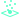
#
{kind=link}
此节点可以发射大量粒子，这些粒子可用于注入密度，从而为许多效果创建高度细节且真实的发射器。
粒子会从接入此节点 Shape 引脚的形状发射。如果没有接入形状，粒子会从发射器根节点处的单个点生成。
需要将 Particle Emitter 输出引脚连接到 Emitters 输入引脚，该输入位于  Simulation 节点，并且 Particles 输出引脚也必须连接到
Simulation 节点，并且 Particles 输出引脚也必须连接到  Simulation 节点的 Particles 输入引脚，该输入位于
Simulation 节点的 Particles 输入引脚，该输入位于  Scene 节点，粒子才会出现。
Scene 节点，粒子才会出现。
此节点包含范围滑块和调制曲线。有关这些内容的更多信息，请查看我们的 范围滑块 和 调制曲线 页面！
Emission#
Continuous emission： 启用时，会关闭连续发射，只保留 burst emission（如果它处于活动状态）。
Seed： 此发射器中随机过程的种子。例如，如果你使用随机方向的初始力，改变 seed 会让粒子向不同方向移动。
Emission Rate： 每秒发射的粒子数。
Burst emission： 从 false 变为 true 时，会释放一次 burst（突发）粒子。
Burst size： 一次 burst 中发射的粒子数量。
Spawn on surface： 粒子会在输入形状的表面生成，而不是在该形状的整个体积内生成。
Jitter Distance： 粒子可以偏离发射形状生成的最大距离，单位为米。
- Emission style： 为粒子选择一种特殊发射模式。
Regular：粒子会均匀发射。
- Entangled：粒子会在发射形状内部以丝状方式发射。
Entanglement count： 缠结生成点之间的粒子数量。较高值会在每条绘制线上放入更多粒子，生成的线更少，从而让效果更明显。
- Clumped：粒子会成团发射。团块形状会根据输入形状略有变化。
Clumped count： 重新聚集到一个团块中的粒子数量。较高值会产生数量更少但更密集的团块，使效果更明显。
Clump size： 团块相对于输入形状大小的百分比尺寸。
- Emission condition： 用于发射粒子的不同条件下拉菜单。
Always：无发射条件。
- Velocity Higher, Lower Than（速度高于/低于）：仅当输入形状的速度高于或低于 Reference velocity 参数中设置的速度时，才生成粒子。
Reference velocity： 用于比较的速度阈值。
Inside, Outside Masking Shape（遮罩形状内/外）：仅当粒子位于遮罩形状内部或外部时才生成。遮罩形状可通过将形状连接到 Mask Shapes 输入引脚（位于 Particles 节点）来定义。
Transform#
- Import control： 如果勾选，蓝色十字准星 Import control 引脚会显示在 Emitter: Particles 节点上，允许将变换作为 Import 节点中的网格或骨骼的子级。在 Control 选项卡中，位于 Import 节点上，你可以勾选骨骼或网格来在该节点上创建输出引脚。此引脚可连接到 Import control 引脚。
Position： 显示父级网格或骨骼传入的位置。
Rotation： 显示父级网格或骨骼传入的旋转。
Position, Rotation, Scale Inherit： 你可以切换 X、Y 和 Z 按钮，以指定传入变换中哪些属性和轴会被继承/使用。默认情况下所有按钮都会打开（蓝色），继承所有变换。
Position, Rotation offset： 对传入的位置和旋转值进行加减偏移。使用视口中的变换和旋转操控器时，这些值也会改变。
- Import control： 如果勾选，蓝色十字准星 Import control 引脚会显示在 Emitter: Particles 节点上，允许将变换作为
Position： 发射器根节点的位置。当没有形状连接到粒子发射器时，此位置会成为粒子的生成点。
Rotation： 发射器根节点的朝向，按每个旋转轴的角度表示。
Freeze#
冻结粒子意味着它不会在空间中移动，也不会注入任何内容。
Emit Frozen Particles： 默认情况下粒子会被冻结（静止）；需要碰撞或遮罩相交才能解冻它们。
Pause until unfreeze： 在解冻发生前暂停粒子生命。勾选后， Life 选项卡中定义的粒子生命周期会从解冻时刻开始计数，而不是从生成时刻开始。
Unfreeze min simulation force： 解冻粒子所需的最小体积力。较低值会让粒子更容易开始解冻，并随模拟密度流动。
Unfreeze min particles force： 解冻粒子所需的由力节点产生的最小力。较高值需要更强的力才能解冻粒子。
Unfreeze on collision： 冻结粒子会在碰撞时解冻。可以使用 colliderNode 节点设置碰撞。
Unfreeze on mask： 冻结粒子与遮罩形状相交时会解冻。遮罩形状可以通过将形状连接到 Mask Shapes 输入引脚（位于 Particles 节点）来设置。
Life#
Lifetime limits： 可能生命周期的范围，单位为秒。生命周期表示粒子从生成时刻起会在模拟中存在多长时间。
Timing randomness： 连续两帧之间发射时机的随机性。使用快速移动的发射形状时，这会很有帮助。较高值会让粒子在一个动画帧和下一个动画帧之间更随机地生成，从而减少阶梯感。
Initial forces#
粒子生成或解冻时添加到粒子上的速度。
- Initial speed Type： 应用的初始力类型。选项包括：
Velocity None：不应用任何初始力。
- Velocity Range：从指定范围内应用随机速度。
Min speed： 在指定轴上添加的最小速度。
Max speed： 在指定轴上添加的最大速度。
Extreme speed： 仅使用极端速度。使用此选项时，速度方向的随机性保持不变，但添加的速度量会基于速度范围的极值，而不是中间的所有值。
- Velocity Cone：从锥形范围内应用随机速度。
Inherit direction 从动画继承锥体方向。例如，如果发射器向左移动，锥体也会朝向左侧。
Cone spreading： 锥体的张开/宽度，单位为度。
Cone filling： 0% 会让粒子只沿锥体表面移动，100% 会让粒子在锥体的整个体积内移动。
Emission speed limits： 发射时粒子的速度范围。
Ellipsoid distribution： 较高值会产生更圆的分布。使用 clumped 或 entangled 时，这一点尤其明显。
Speed scale： 速度缩放乘数。会乘以任何初始力。它可用于只用一个参数增加初始力，而不必调整多个 min/max 参数。
Velocity transfer： 生成时从粒子发射器传递到粒子的速度。较高值会沿发射器形状运动方向添加更强的速度。
Localized force： 团块或缠结丝内粒子初始力的随机化量。0% 会给每个粒子一个随机速度，100% 会让团块或缠结丝内的每个粒子获得相同的随机速度。
Active forces#
这里有两套“模拟”在同时工作。
{kind=link}
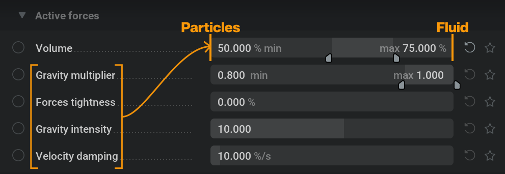
一套基于经典牛顿力学（类似篮球轨迹）和 Force 节点的力来控制粒子运动（如果 forces mode 设置为 Particles 或 Volume and Particles).
另一套是流体运动（例如浮力以及烟雾和火焰的速度）。
此实现可以使用影响范围，在每个粒子层面混合这两套“模拟”。需要理解的是， Gravity multiplier（重力倍增）、Forces tightness（力贴合度）、Gravity intensity（重力强度）和 Velocity damping（速度阻尼） 这些参数只应用于上面提到的“经典”粒子运动。
例如，如果将 Volume 参数设为 0%，会得到“篮球”行为；如果设为 100%，粒子会严格随流体运动“漂浮”，并忽略此选项卡中的其他参数。
Volume： 粒子物理类型的范围。100% 的粒子会 100% 跟随模拟流动，0% 会完全忽略模拟流动。
Gravity multiplier： 应用的重力大小。每个粒子都会从此随机范围内分配一个重力。值越高，粒子受重力向下移动越快。
Forces tightness： 设为 100% 时，力会作为速度使用。设为 0% 时，力会作为加速度使用。较低值会让粒子更严格地跟随力速度的形状。请注意，forces mode 需要设为 Particles 或 Volume and Particles。
Velocity damping： 每秒损失的速度百分比。这会让粒子随时间减速，可用于模拟阻力。
Collisions#
可以使用 colliderNode 节点设置碰撞。
Particles bounciness： 弹性范围。0% 会停止进入的粒子，100% 会让粒子以完全反向速度弹开。
Particles friction： 摩擦范围。较高值会让粒子更贴附于碰撞体。
Bounce randomization： 偏离完美逻辑反弹方向并朝其他方向运动的概率。
Repulsion distance： 碰撞体周围排斥场的距离。较高值会让粒子在形状周围更远处被排斥。
- Repulsion intensity： 作用在粒子上的排斥力强度。较高值会让粒子远离碰撞体表面，负值会吸引粒子靠近碰撞体表面。
如果 Repulion distance 或 Repulsion intensity 设为 0，排斥场就不会影响粒子。
- Non ground bounds/Ground bound： 定义粒子碰到边界框面时的行为。
Ignore：粒子会直接穿过边界，就像边界不存在一样。
Kill：粒子碰到边界时会消失。
Stop：粒子碰到边界时会停止，无法继续穿过该边界。它们仍可向其他方向移动。
Bounce：粒子会根据上面的参数与边界发生碰撞。
Shape#
在此选项卡中，可以从形状角度改变粒子的外观。
请注意，只有 Size limits 参数会影响模拟（更大的粒子注入更多），其他参数只改变粒子在渲染中的外观，不会影响模拟。
Display scale multiplier： 粒子渲染大小的全局缩放。
- Size limits： 粒子的大小会在此范围内随机选取。
Size by life modulation： 此曲线横轴表示粒子生命（左侧为出生，右侧为死亡），纵轴表示粒子缩放百分比（基于 size limits，底部为 0%，顶部为 100%）。
Sharpness： 渲染粒子的锐利度。100% 会让粒子变成锐利圆形，0% 会让粒子变成柔和点。
Roundness： 较高值会让粒子看起来更像 3D 球体。（与高 sharpness 值组合时不可见。）
- Particles render type： 粒子的渲染方式：
Camera Aligned：精灵始终面向摄像机。
Camera Aligned Fixed Size（摄像机对齐固定大小）：精灵始终面向摄像机，并且无论与摄像机距离如何都保持相同缩放。
- Velocity Aligned：精灵沿其速度方向定向。这会显示以下参数：
- Blur type： 为精灵添加不同类型的模糊：
Velocity scale： 速度对粒子拉伸的影响。
Velocity limit： 允许的最大粒子拉伸。
Velocity Aligned Fixed Size（速度对齐固定大小）：精灵沿其速度方向定向，并且无论与摄像机距离如何都保持相同缩放。
Rendering#
此选项卡控制粒子的渲染方式及其颜色。
Render particles： 切换是否显示粒子。
- Particles Type： 粒子渲染类型下拉菜单：
- Lit：粒子会与光照交互，并且可以投射阴影。
Cast Shadows： 粒子会参与体积遮挡计算。此项会切换粒子是否投射阴影。
Particles occlusion： 用于计算阴影的粒子遮挡。表示阴影效果的百分比。
- Emissive（自发光）：粒子可以向场景中注入光照，照亮烟雾。
Inject light in scattering（向散射注入光照）： 粒子是否参与体积光照。
Emissive boost（自发光增强）： 提升粒子颜色，使粒子更亮，并发出更多光。
- Particles blend type： 粒子的混合模式/合并操作。
- Translucent：粒子颜色会根据 Alpha 量与背景混合。以下参数会在使用 Translucent 或 Translucent Additive 时显示在选项卡底部:
Opacity： 较低值会让粒子看起来更透明。
Alpha attenuation over life： 粒子在生命周期内的 Alpha 衰减，100% 会让粒子在生命结束时完全消失。
Additive：粒子颜色会添加到渲染上，产生更明亮、更魔幻的外观。
Translucent Additive（半透明加法）：背景强度会根据 Alpha 量降低，并在其上添加粒子颜色。因此可同时实现两种情况：有 Alpha 时，会先降低背景强度再混合；没有 Alpha 时，则只是加法。
- Initial color type： 对连接到 Color Gradient 的 Initial Color 参数进行解释的方法：
Uniform Color：所有粒子使用单一颜色（因此不能使用颜色渐变）。
Random Per Particle（每粒子随机）：每个粒子都会从指定的 Color Gradient 中获得随机颜色。
Per Particle Matching Size（按粒子大小匹配）：每个粒子的颜色会根据其大小映射到 Color Gradient（从左到右 = 小到大）。
Per Particle Matching Lifetime（按粒子生命周期匹配）：每个粒子的颜色会根据其生命周期映射到 Color Gradient（从左到右 = 短到长生命周期）。
- Position Based（基于位置）：发射的粒子会根据其在 3D 噪声中的位置映射到渐变。这会显示以下参数：
Noise frequency： 噪声频率。较高值意味着会有更大的区域发射相同颜色。
Noise speed： 噪声动画速度。值为 0 表示非动画噪声。较高值会让区域更频繁地发射不同颜色。
- Cycle With Time（随时间循环）：会在每个时间周期内发射不同渐变颜色。每个周期都会从左到右选取 Color Gradient 点。这会显示以下参数：
Cycle duration： 一个颜色周期的持续时间。
Ping Pong With Time（随时间往返）：会在每个时间周期内发射不同渐变颜色。每隔一个周期，从 Color Gradient 点左到右再从右到左选取。此方法也会使用 Cycle Duration 参数。
- Velocity Based：根据发射器速度选取颜色。发射器移动越快，发射粒子分配到的颜色就越靠近 Color Gradient。
Max speed： 重映射坡道的上限速度。较低值意味着发射器只需较低速度，就能让生成粒子获得更靠近 Color Gradient 的右侧颜色。因此，如果你只看到渐变左侧的颜色，请尝试降低此值。如果只看到渐变右侧的颜色，请尝试提高此值。
Initial color： 生成粒子的颜色。暴露此参数可将 Color Gradient 连接到它。
- Modulation type： 根据连接到 Color Gradient 的 Modulation Color 参数，对颜色值进行乘法调制：
Uniform Color Modulation（统一颜色调制）：所有粒子都会被均匀调制，不会乘以 Modulation color
- Modulation Over Life（随生命周期调制）：在生命开始时，每个粒子的颜色都会乘以 Color Gradient 渐变左侧；在生命结束时乘以 Color Gradient 的右侧。例如，当使用 Color Gradient（从左到右由白色渐变到黑色）时，粒子会在生命周期内淡出。
Flip modulation gradient： 这会将 Color Gradient 从右到左解释，而不是从左到右解释。
Modulation over life limits： 可设置用于将生命值映射到渐变的解释范围。例如，当生命周期只映射到渐变中太小的区域时，这会很有用。
- Modulation Over Size（随大小调制）：从小到大的粒子会从左到右乘以渐变颜色。
Modulation over size limits： 可设置用于将大小值映射到渐变的解释范围。例如，当大小只映射到渐变中太小的区域时，这会很有用。
- Modulation Over Speed（随速度调制）：从慢到快的粒子会从左到右乘以渐变颜色。
Modulation over speed limits： 可设置用于将速度值映射到渐变的解释范围。例如，当速度只映射到渐变中太小的区域时，这会很有用。
Modulation color： 用于乘以初始颜色的颜色。暴露此参数可将 Color Gradient 连接到它。
Alpha attentuation over life： 粒子在生命周期内的 Alpha 衰减，100% 会让粒子在生命周期结束时变为透明。
Color attentuation over life： 粒子在生命周期内的颜色衰减，100% 会让粒子在生命周期结束时变为黑色。
Injection#
Inject velocities & components： 如果启用，粒子会向模拟中注入速度和分量密度。尺寸更大的粒子（通过 Size limits 参数设置，该参数位于 Shape 选项卡中）会注入更多。
Smoke, Fuel, Flames： 向模拟中注入烟雾、燃料或火焰密度。此值是针对该粒子数量和尺寸可添加最大密度量的百分比。此处非 0 值会显示一条调制曲线，可按粒子年龄映射注入量。
- Initial temperature type： 用于将 Temperature 范围映射到粒子的不同方法下拉菜单。
Uniform Temperature：所有粒子使用单一温度（Temperature 范围的最大温度）。
Random Per Particle（每粒子随机）：每个粒子都会从指定的 Temperature 范围中获得随机温度。
Per Particle Matching Size（按粒子大小匹配）：每个粒子的温度会根据其大小映射到 Temperature 范围。这会使用 Temperature ramp 完成，其中横轴表示从小到大，纵轴表示 Temperature 范围的最低到最高值。
Per Particle Matching Lifetime（按粒子生命周期匹配）：每个粒子的温度会根据其生命周期映射到 Temperature 范围。这会使用 Temperature ramp 完成，其中横轴表示从出生到死亡，纵轴表示 Temperature 范围的最低到最高值。
- Position Based（基于位置）：发射的粒子会根据其在 3D 噪声中的位置映射到 Temperature 范围。这会显示以下参数：
Noise frequency： 噪声频率。较高值意味着会有更大的区域发射相同 Temperature。
Noise speed： 噪声动画速度。值为 0 表示非动画噪声。较高值会让区域更频繁地发射不同温度。
- Cycle With Time（随时间循环）：会在每个时间周期内从 min 到 max 发射 Temperature 范围中的所有不同值。这会显示以下参数：
Cycle duration： 一个 Temperature 范围周期的持续时间。
Ping Pong With Time（随时间往返）：会在每隔一个时间周期内，在 min（最小值）到 max（最大值）以及 max（最大值）到 min（最小值）之间交替发射 Temperature 范围中的所有不同值。此方法也会使用 Cycle Duration 参数。
- Velocity Based：根据发射器速度选取温度。发射器移动越快，发射粒子分配到的温度就越靠近 Temperature 范围的右侧。
Max speed： 重映射坡道的上限速度。较低值意味着发射器只需较低速度，就能让生成粒子获得更靠近 Temperature 范围右侧的温度。因此，如果只看到渐变左侧的温度，请尝试降低此值。如果只看到渐变右侧的温度，请尝试提高此值。
Temperature： 可分配给粒子的可能温度值范围。
Velocity： 将粒子速度注入模拟。较高值会添加更强的速度。当粒子也受模拟影响时，这可以产生加速效果。此处非 0 值会显示一条调制曲线，可按粒子年龄映射注入量。
导出  #
#
Render  #
#
这里可以使用各种设置渲染并导出图像文件。
这里做出的调整只会在视口的 Render 选项卡中可见。
Render Passes（渲染通道）#
渲染通道（也称为 AOV 或捕获类型）包含场景的特定信息。在合成软件或游戏引擎中使用效果时，这些信息非常有用。
有关如何使用此选项卡进行渲染通道映射的详细说明，请查看我们的 渲染通道映射 页面！
- 以下是所有可用渲染通道的列表：
Render Viewport（渲染视口）：渲染所有元素，得到与你在 Scene 选项卡中看到的相同结果。
Render All：最终着色。
Smoke：只渲染烟雾分量，禁用火焰和燃料渲染。
Emissive and Scattering（自发光和散射）： Emissive 和 Scattering 渲染通道合成在一起。
Emissive（自发光）： Flames 通道。
Scattering（散射）：火焰或自发光形状对烟雾的光照贡献。
Direct Light：除环境光以外的所有光照贡献。
Ambient Light：来自 Light: Ambient 节点的光照贡献。
Alpha：透明通道。
Depth：将可见体素按其到摄像机的距离映射。值越高表示离摄像机越近，值越低表示越远。
Motion Vector（运动矢量）：描述每个像素从一帧到下一帧的运动。可在其他软件包中用于帧间插值并减少阶梯感。
Six Point 1 (TLR)：基于六个角度解释法线。此通道将 top、left 和 right 映射到 RGB。可在合成中轻松遮罩效果的特定侧面。
Six Point 2 (BBF)：基于六个角度解释法线。此通道将 bottom、back 和 front 映射到 RGB。可在合成中轻松遮罩效果的特定侧面。
Six Point Normal Map（六向法线贴图）：基于六个角度解释法线，用作其他 3D 软件包中翻页序列着色器的输入。
Gradient Based Normal Map（基于渐变的法线贴图）：基于渐变解释法线，用作其他 3D 软件包中翻页序列着色器的输入。
Albedo：烟雾的颜色值。
Smoke Mask： Smoke 通道的密度图。
Flames Mask： Flames 通道的密度图。
Temperature： Temperature 通道的密度图。
Render Shapes：形状的最终着色。
Direct Light Shapes（直接光形状）：除环境光以外，形状接收到的所有光照贡献。
Ambient Light Shapes（环境光形状）：来自 Light: Ambient 节点对形状的光照贡献。
Emissive Shapes（自发光形状）：形状的自发光值。形状可在 Visuals 选项卡中设置为自发光，该选项卡位于 Emitter 或 Collider 节点上。
Scattering Shapes（散射形状）：火焰或自发光形状对形状的光照贡献。
Emissive and Scattering Shapes（自发光和散射形状）： Emissive 和 Scattering 形状数值相加。
Shadow Shapes：输出投射到形状上的阴影通道。可在合成中让效果看起来像是在镜头中投下阴影。
Alpha Shapes：形状的透明通道。
在 Render 选项卡中，可以通过视口顶部的下拉菜单选择并预览所有渲染通道。
Export#
- Export Mode 可用的导出模式如下：
- Flipbook（翻页序列）：游戏引擎中使用的导出方式，时间轴中的每一帧都会在一个大图像文件中占据自己的方格。
Flipbook Size： 翻页序列图像的分辨率。每个翻页序列帧的宽度和高度分辨率等于此值除以行数和列数。
Flipbook Columns/Rows： 翻页序列的列数/行数（水平/垂直排列的帧）。 Columns x Rows（列 x 行）= 最大帧数
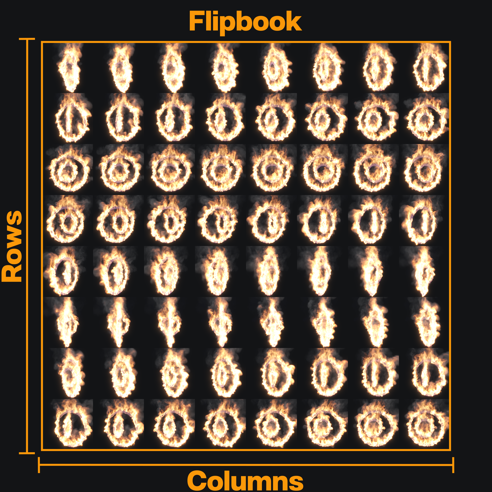
- Sequence：视频中使用的导出方式，每一帧都会得到自己的图像文件。
Image Size： 序列中每个图像文件的像素分辨率。
{kind=link}
在 W 和 H（宽度和高度）字段旁边有一个下拉菜单，可选择 720p、1080p 或 4k 的分辨率预设。也可以在 W 和 H 字段中输入所需的像素分辨率，然后点击  图标来添加自己的预设。
图标来添加自己的预设。
First Frame： 将要导出的时间轴第一帧。
Number of Frames： 将要导出的总帧数。
Frame Stride 导出帧之间的帧数间隔。值为 1 表示导出所有连续帧，值为 2 表示每隔一帧导出，以此类推。
Numbering offset： 应用于结果文件名中帧编号的偏移。例如，如果此参数设为 1000，则序列中的第一个文件会使用编号 1000，第二个文件使用 1001，以此类推。
Absolute Frames 启用后，会使用绝对时间轴帧编号，而不是从 0 递增。
Specifying the Frame Range：
- 有两种方式可以指定要导出的帧范围：
每个 Render 节点都会在 Timeline Editor（时间轴编辑器） 中显示为蓝色条，用来表示要导出的帧范围。可以
通过点击并拖动来移动和调整大小。可使用 First Frame 和 Number of Frames 参数，它们位于 Export 选项卡中，属于 Render 节点，可用于指定范围。例如，如果要导出帧 230 到 450，则将 First Frame 设为 230，将 Number of Frames 设为 221 (450 - 230 + 1)。
{kind=link}
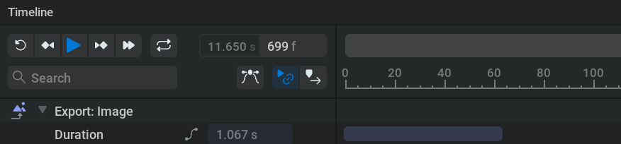
- Directory： 可以使用 Directory 和 Filename 字段设置导出文件的目录和名称。目录可以直接输入到文本字段中，也可以点击
 图标后，在弹出的文件浏览器中选择。建议将文件导出到本地。如果导出到网络驱动器，可能会导致模拟和渲染不稳定；这适用于所有文件类型。文件格式可以设为以下任一种：
图标后，在弹出的文件浏览器中选择。建议将文件导出到本地。如果导出到网络驱动器，可能会导致模拟和渲染不稳定；这适用于所有文件类型。文件格式可以设为以下任一种： .png：推荐用于较小文件大小
.tga：推荐用于更快导出
.exr：用于未压缩或 HDR 工作流
- Directory： 可以使用 Directory 和 Filename 字段设置导出文件的目录和名称。目录可以直接输入到文本字段中，也可以点击
当文件类型选择 .exr，并且选择 Multi Layer 或 Multi Part 作为 EXR Type 下拉菜单的值时，渲染通道会作为一个文件内的图层导出。对于其他文件格式，每个图层都会导出为单独文件。
由于导出过程通常会生成多个输出文件， Directory 和 Filename 字段可以使用变量，以便系统化地为输出文件和文件夹命名。
{kind=link}
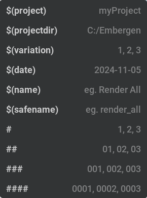
这些变量可以从下拉菜单中选择添加；  当你在文本字段内点击时，该菜单会出现。
当你在文本字段内点击时，该菜单会出现。
此下拉菜单左侧显示变量，右侧显示变量结果示例。
可以通过查看  图标旁边的文本预览生成的导出文件名。
图标旁边的文本预览生成的导出文件名。
- 可以使用以下内置变量：
$(project)会被替换为 .ember 项目文件名。$(projectdir)会被替换为 .ember 文件的文件路径。添加\..会向上移动一级文件夹。$(date)会被替换为当前日期（年-月-日）。$(variation)会被替换为当前 variation。有关导出 variation 的更多信息，请查看我们的 随机化 部分！$(name)会被替换为图层名称。此变量不可用于 EXR Multi Layer（多层）或 Multi Part（多 Part）文件，也不会解析，因为它们会把所有图层存储在一个文件中。$(safename)会被替换为“安全”的图层名称版本。它只会包含字母数字字符，将&和+替换为and，并把任何其他字符转换为下划线。此变量不可用于 EXR Multi Layer（多层）或 Multi Part（多 Part）文件，也不会解析，因为它们会把所有图层存储在一个文件中。连续的
#会被替换为从 0 开始的帧编号。编号会用零填充，直到位数与#字符数量相同。如果 Absolute Frames 已勾选，则会使用模拟步编号（即第一个值等于 First Frame 而不是 0）。
示例：
2023-02-23，我正在处理一个名为 myEmbergenProject_04.ember 的文件，它位于我电脑上的 C:\Projects\myEmbergenProject\projectFiles\Ember。我想将几个渲染通道导出为 png，其中一个是 Render All。
在 Directory 字段中输入以下文本： $(projectdir)\..\..\EXPORTS\$(date)\$(project)\$(name)
在 Filename 字段中输入以下文本： $(project)_$(safename)_###，并把旁边下拉菜单中的扩展名设为 .png
导出后，我想查看 Render All 渲染通道的第 1 帧，它会位于以下位置并使用此名称：
C:\Projects\myEmbergenProject\EXPORTS\2023-02-23\myEmbergenProject_04\Render Viewport\myEmbergenProject_04_render_viewport_001.png
可以在 Settings > Preferences > User Variables中设置自定义变量。更多细节请查看我们的 User Variables 部分。
Export to file： 蓝色的 Export Now 按钮会开始导出文件。 Open Folder 按钮会在文件所在或将要保存的位置打开文件浏览器。
如果有多个导出节点，可以在节点图中框选它们，然后右键点击 这些节点并选择 Export All。或者，也可以使用 Export All 下方的 Node Details（节点详情） 按钮（只有在选择了多个导出节点时才会显示）。
Render Settings#
此选项卡中的参数会根据 Render Passes（渲染通道） 选项卡中当前选择的渲染通道而变化。
因此，此选项卡可用于轻松找到所选渲染通道的相关参数。
这里显示的所有参数也可以在视口的 Render 选项卡中找到，方法是点击渲染通道下拉菜单旁边的  图标。
图标。
Common Parameters：
无论选择哪个渲染通道，这些参数都会显示。
- Alpha Blending Mode：
Premultiplied Alpha（预乘 Alpha）：也称 Composite Alpha（合成 Alpha），预期按以下方式混合：
final_color = sampled_color + background_color * (1 - sampled_alpha)即与常规 Alpha（透明度）混合相比，Alpha（透明度）已经预先相乘。在预乘模式下，火焰不属于 Alpha（透明度）通道，而是直接叠加在渲染结果上。- Straight Alpha
- Emissive Alpha Mode（自发光 Alpha 模式）：
None：Emissive（自发光）通道不会向 Alpha 通道添加任何内容。
Black to Alpha（黑色转 Alpha）：Emissive（自发光）通道中所有非黑色内容都会添加到 Alpha 通道。
Luminance：根据 Emissive（自发光）通道的亮度将其添加到 Alpha 通道。
Invert Render Alpha： 反转 Alpha 通道，这样可以将它用作遮罩，并在把 RGB 渲染层相加之前乘以背景颜色，从而得到预乘 Alpha 混合。
- Shapes Rendering： 形状的渲染方式。
Ignore：不渲染。
Regular Lit：阻挡后方的烟雾和火焰，并受所有光照照亮。
Regular Unlit：阻挡后方的烟雾和火焰，但不接收任何光照。使用 Albedo 颜色，该颜色在 Visuals 选项卡中，位于 Emitter 或 Collider 节点上。
Regular Black：阻挡后方的烟雾和火焰，但不接收任何光照。
Holdout：阻挡后方的烟雾和火焰，并从 Alpha 通道中扣出形状。当你有需要穿过烟雾或火焰的形状时，这在合成中会很有用。
Shapes Masking： 渲染形状时，对被体积效果覆盖的部分进行遮罩。
Invert Shapes Alpha： 反转 Alpha 通道，这样可以将它用作遮罩，并在把 RGB 渲染层相加之前乘以背景颜色，从而得到预乘 Alpha 混合。
使用来自 Particles 节点的粒子时，以下参数可能很有用。
例如，可以使用多个 Render 节点，通过以下设置分别渲染体积和粒子，以便在合成中获得更多控制。
Volume Occlude Particles： 决定粒子是否被体积遮挡。取消勾选会移除烟雾投射到粒子上的阴影。
Particles Occlude Volume： 决定体积是否被粒子遮挡。取消勾选会移除粒子投射到烟雾上的阴影。
Render Volume： 决定是否渲染体积（烟雾、火焰）。
Render Particles： 决定是否渲染粒子。
Depth：
Depth Min： 导出范围使用的最小深度。低于此值的所有深度都会被钳制为 0。
Depth Max： 导出范围使用的最大深度。高于此值的所有深度都会被钳制为 1。
Motion Vector（运动矢量）：
MV outer blur radius： 运动矢量的外部模糊半径，用于扩展运动矢量覆盖的区域。
MV inner blur radius： 运动矢量的内部模糊半径，用于移除不需要的细节。
Six Point：
Six points world space： 为 true 时，光照方向使用世界空间，而不是相对于摄像机方向。
Six points black background： 为 true（真）时，背景为黑色，光照会与烟雾 Alpha 相乘。为 false（假）时，光照会调整为不依赖烟雾 Alpha。
Smoke density boost： 烟雾密度倍增器。处理很薄的烟雾时会很有用。
Exposure adjustment： 偏移亮度。
Gamma adjustment： 调整从黑场到白场的插值。
Blacks adjustment： 偏移黑场。用于重映射数值。
Whites adjustment： 偏移白场。用于重映射数值。
Per direction parameters： 是否对所有方向使用 Shadowing intensity，或者为每个方向使用单独的阴影强度参数。
Shadowing intensity： 用于重建法线的全局阴影强度。通道过亮并丢失细节时，可以提高此值。
Top, Right, Left, Bottom, Back, Front Shadowing intensity： 指定侧面的阴影强度。
Six Point Normal Map（六向法线贴图）：
Normal shadowing intensity： 用于重建法线的全局阴影强度。注意，阴影过强会让所有细节只集中在边缘，阴影过弱则会产生互相抵消的区域。
Normal smoke density boost： 烟雾密度倍增器。处理很薄的烟雾时会很有用。
Normal intensity： 重建法线的强度。
Normalize normal： 启用后，贴图会被强制使用完整颜色范围。
Gradient Based Normal Map（基于渐变的法线贴图）：
Low frequencies： 低频细节对遮罩的贡献。
Medium frequencies： 中频细节对遮罩的贡献。
High frequencies： 高频细节对遮罩的贡献。
Smoke Mask：
Smoke range min： 导出范围使用的最小烟雾密度。
Smoke range max： 导出范围使用的最大烟雾密度。
Flames Mask：
Flames range min： 导出范围使用的最小火焰密度。
Flames range max： 导出范围使用的最大火焰密度。
Temperature：
Temperature range min： 导出范围使用的最低温度。
Temperature range max： 导出范围使用的最高温度。
Scattering Shapes（散射形状）：
Ground receives scattering（地面接收散射）： 如果勾选，击中地面平面的火焰光照会添加到渲染通道。
Shadow Shapes：
Shapes cast shadows： 如果勾选，形状投射的所有阴影都会添加到阴影通道。如果只需要合成体积效果的阴影，可以取消勾选。
Ground receives shadow 如果勾选，投射到地面平面的阴影会添加到阴影通道。
VDB  #
#
此节点用于导出 VDB。VDB 文件会存储体素数据，可用于将 3D 体积效果导入其他 3D 软件包。
有关如何导出 VDB 文件的详细说明，请查看我们的 exportVDB 页面！
Export#
Directory： 可以使用 Directory 和 Filename 字段设置导出文件的目录和名称。目录可以直接输入到文本字段中，也可以点击
图标后，在弹出的文件浏览器中选择。建议将文件导出到本地。如果导出到网络驱动器，可能会导致模拟和渲染不稳定；这适用于所有文件类型。
可以使用变量动态命名文件和目录。
这些变量可以从下拉菜单中选择添加；  当你在文本字段内点击时，该菜单会出现。
当你在文本字段内点击时，该菜单会出现。
此下拉菜单左侧显示变量，右侧显示变量结果示例。
- 可以使用以下内置变量：
$(project)会被替换为 .ember 项目文件名。$(projectdir)会被替换为 .ember 文件的文件路径。添加\..会向上移动一级文件夹。$(date)会被替换为当前日期（年-月-日）。连续的
#会被替换为从 0 开始的帧编号。编号会用零填充，直到位数与#字符数量相同。如果 Absolute Frames 已勾选，则会使用模拟步编号（即第一个值等于 First Frame 而不是 0）。
可以在 Settings > Preferences > User Variables 中设置自定义变量。有关说明请查看我们的 User Variables 部分。
Export to file： 蓝色的 Export Now 按钮会导出所选导出节点的 VDB。 Open Folder 按钮会用文件浏览器打开已导出或将要导出的 VDB 文件位置。
First Frame： 将要导出的第一帧。
Num Frames： 将要导出的总帧数。
也可以  通过在时间轴中点击并拖动蓝色条来设置帧范围。
通过在时间轴中点击并拖动蓝色条来设置帧范围。
Frame Stride： 导出帧之间的帧数间隔。值为 1 表示导出所有连续帧，值为 2 表示每隔一帧导出。
Numbering offset： 应用于结果文件名中帧编号的偏移。例如，如果此参数设为 1000，则序列中的第一个文件会使用编号 1000，第二个文件使用 1001，以此类推。
Use Absolute Frames： 启用时，会使用时间步，而不是从 0 递增。
Controls#
Export Density, Temperature, Fuel, Flames, Velocity： 如果勾选，该通道会导出到 VDB 文件。默认只勾选 Export Density 和 Export Flames，因为这是渲染大多数模拟所需的两个通道。
Density, Temperature, Fuel, Flames, Velocity name： 可在这里重命名通道，让它们在目标应用程序中以不同名称显示。
Density, Temperature, Fuel, Flames, Velocity grid class： 用于特定目标应用程序和工作流的标签。不会改变数据。
Single velocity grid： 如果勾选，速度只使用一个矢量网格。否则会使用三个标量网格，每个分量一个。
Coordinate System： 文件使用的坐标系。应设置为你要导出到的目标坐标系。例如导出到 Maya 时，应设为 Y Up Right Handed。
Length Unit： 导出文件的长度单位。这会决定导入 VDB 时的比例，应设置为你要导出到的 3D 软件包使用的长度单位。例如导出到 Maya 时，应设为 Centimeters。
Advanced#
Remap values： 通过此设置，可以使用 min,max 滑块将每个通道所需的密度范围重映射到 VDB 数据中的 0 到 1 范围。高于该范围的密度会得到大于 1 的值，低于该范围的密度会被移除。
有关如何使用直方图的详细信息，请查看我们的 直方图 页面。
Threshold： 要导出的单元格（体素）的最小值；任何密度低于该阈值的单元格都不会导出。
Particles  #
#
此节点可以将粒子存储到 Alembic 文件中。
此节点的设置方式是将 Particles 输入引脚连接到 Particles 输出引脚，该输出引脚位于 Simulation 节点上。
Export#
Directory： 可以使用 Directory 和 Filename 字段设置导出文件的目录和名称。目录可以直接输入到文本字段中，也可以点击
图标后，在弹出的文件浏览器中选择。建议将文件导出到本地。如果导出到网络驱动器，可能会导致模拟和渲染不稳定；这适用于所有文件类型。
可以使用变量动态命名文件和目录。
这些变量可以从下拉菜单中选择添加；  当你在文本字段内点击时，该菜单会出现。
当你在文本字段内点击时，该菜单会出现。
此下拉菜单左侧显示变量，右侧显示变量结果示例。
- 可以使用以下内置变量：
$(project)会被替换为 .ember 项目文件名。$(projectdir)会被替换为 .ember 文件的文件路径。添加\..会向上移动一级文件夹。$(date)会被替换为当前日期（年-月-日）。连续的
#会被替换为从 0 开始的帧编号。编号会用零填充，直到位数与#字符数量相同。如果 Absolute Frames 已勾选，则会使用模拟步编号（即第一个值等于 First Frame 而不是 0）。
可以在 Settings > Preferences > User Variables 中设置自定义变量。有关说明请查看我们的 User Variables 部分。
Export to file： 蓝色的 Export Now 按钮会导出所选导出节点的内容。 Open Folder 按钮会用文件浏览器打开已导出或将要导出的文件位置。
Single file： 如果勾选，所有帧都会存储在单个文件中，而不是文件序列中。
Use Absolute Frames： 启用时，会使用时间步，而不是从 0 递增。
Automatic frames： 如果勾选，会使用绝对时间轴帧编号，而不是从 0 递增。
First Frame： 将要导出的第一帧。
Num Frames： 将要导出的总帧数。
也可以  通过在时间轴中点击并拖动蓝色条来设置帧范围。
通过在时间轴中点击并拖动蓝色条来设置帧范围。
Frame Stride： 导出帧之间的帧数间隔。值为 1 表示导出所有连续帧，值为 2 表示每隔一帧导出。
Numbering offset： 应用于结果文件名中帧编号的偏移。例如，如果此参数设为 1000，则序列中的第一个文件会使用编号 1000，第二个文件使用 1001，以此类推。
Controls#
Export colors： 如果勾选，会导出粒子颜色值。可以使用 Rendering 选项卡中的参数以多种方式分配颜色，该选项卡位于 Emitter: Particles 节点上。
Export densities： 如果勾选，会导出粒子的透明度值。可以使用 Rendering 选项卡中的参数以多种方式分配 Alpha，该选项卡位于 Emitter: Particles 节点上。
Export lifetimes： 如果勾选，会导出粒子的生命周期值。它表示每一帧剩余的生命周期秒数。生命周期可在 Life 选项卡中设置，该选项卡位于 Emitter: Particles 节点上。
Export sizes： 如果勾选，会导出由 Size limits 参数决定的粒子大小，该参数位于 Shape 选项卡中，位于 Emitter: Particles 节点上。注意 Display scale multiplier 参数不会用于导出。
Coordinate System： 文件使用的坐标系。应设置为你要导出到的目标坐标系。例如导出到 Maya 时，应设为 Y Up Right Handed。
力  #
#
力会向模拟中添加速度，从而影响密度的流动。
力可以连接到  Simulation 节点以影响整个模拟，也可以连接到
Simulation 节点以影响整个模拟，也可以连接到  Emitter: Volume 节点，使其只在连接到发射器的形状体积内生效。
Emitter: Volume 节点，使其只在连接到发射器的形状体积内生效。
通过将形状连接到节点左侧的 Mask Shapes 输入引脚，可以用形状遮罩所有力。随后该力只会应用于该形状的体积内。
Line  #
#
此节点表示线形力场。
General#
Force activity： 如果设为 false，该力会被忽略。
Tether Mask Shapes： 会将 Mask Shape 作为该力变换的子级。
Show Force Mask： 如果勾选，Mask Shape 会在视口中以绿色显示。这有助于预览力的作用位置。
Mode： 选择该力影响 Volume（体积）、Particles（粒子）还是二者。
Push Strength： 沿线推动的强度。负值会反转方向。
Twist Strength： 绕线扭转的强度。负值会向相反方向扭转。
Repel Strength： 从线向外排斥或向线吸引的强度。正值会从线向外推开，负值会向线拉近。
Additional pressure rate： 向模拟中注入正压或负压。正值会爆开，负值会内爆。
- Falloff： 衰减表示该力只会影响距线一定距离内的模拟。使用衰减会明显减弱力，因此可能需要调整强度进行补偿。
None：无衰减，该力会影响整个模拟。
Linear：力强度线性衰减。
Quadratic：力沿二次（指数）曲线衰减，比线性衰减更快。
- Cubic：力沿三次曲线衰减。 Linear（线性）、Quadratic（二次）、Cubic（三次）和 Custom（自定义） 会显示以下参数：
- Use segment： 勾选后可以指定线形力的线段长度。
Segment length： 线段长度。此线段之外的所有内容都不会受该力影响。
Inverse falloff： 为 true 时，靠近该线时力会减弱。
Falloff percent： 衰减范围外要移除的力的比例。
Falloff distance： 衰减距离，单位为米。
Falloff inner bound： 距线的距离，单位为米；在该距离处力最大。
- Custom：力沿指定指数衰减。
Falloff exponent： 衰减的曲线指数，值越高，力消失得越快。可将其视为曲线的 gamma 值。
Transform#
- Import control： 如果勾选，蓝色十字准星 Import control 引脚会显示在 Force: Line 节点上，允许将变换作为 Import 节点中的网格或骨骼的子级。在 Control 选项卡中，位于 Import 节点上，你可以勾选骨骼或网格来在该节点上创建输出引脚。此引脚可连接到 Import control 引脚。
Position： 显示父级网格或骨骼传入的位置。
Rotation： 显示父级网格或骨骼传入的旋转。
Position, Rotation, Scale Inherit： 你可以切换 X、Y 和 Z 按钮，以指定传入变换中哪些属性和轴会被继承/使用。默认情况下所有按钮都会打开（蓝色），继承所有变换。
Position, Rotation offset： 对传入的位置和旋转值进行加减偏移。使用视口中的变换和旋转操控器时，这些值也会改变。
- Import control： 如果勾选，蓝色十字准星 Import control 引脚会显示在
Position： 此线形力的位置。
Rotation： 线形力沿 X、Y 和 Z 轴的旋转角度，单位为度。它决定力的方向。
Chaos#
Chaos 会基于 3D 噪声改变力的强度。
Chaos scale： 力混沌的大小。较高值表示细节更少、变化更大。
Chaos animation speed： Chaos 的动画速度，值越高，噪声变化越频繁。
Chaos intensity： Chaos 的强度，值越高表示随机性越强。
Chaos seed： 用于生成 Chaos 噪声图案的种子。每个种子都会产生不同的随机性。
Masking#
Constant mask： 所有通道上的力影响百分比。
Velocity, Temperature, Smoke mask 基于速度、温度或烟雾的力影响百分比。力会根据这些属性是否存在进行遮罩。负值会使这些属性上的力变弱。
Reference to the Visual tab：
Visual 可视化此力添加的速度。仅当节点已连接、处于活动状态且被选中时有效。
Toroidal  #
#
General#
Force activity： 如果设为 false，该力会被忽略。
Tether Mask Shapes： 会将 Mask Shape 作为该力变换的子级。
Show Force Mask： 如果勾选，Mask Shape 会在视口中以绿色显示。这有助于预览力的作用位置。
Mode： 选择该力影响 Volume（体积）、Particles（粒子）还是二者。
Push strength： 沿环面形状的圆穿过并环绕推动的强度。负值会反转方向。
Twist strength： 沿虚线环面圆扭转的强度。正值会逆时针扭转，负值会顺时针扭转。
Repel strength： 沿虚线环面圆向外排斥或向内吸引的强度。正值会从该圆向外推开，负值会向该圆拉近。
Radius： 环面的半径。
Additional pressure rate： 向模拟中注入正压或负压。正值会爆开，负值会内爆。
- Falloff： 衰减表示该力只会影响距圆一定距离内的模拟。使用衰减会明显减弱力，因此可能需要调整强度进行补偿。
None：无衰减，该力会影响整个模拟。
Linear：力强度线性衰减。
Quadratic：力沿二次（指数）曲线衰减，比线性衰减更快。
- Cubic：力沿三次曲线衰减。 Linear（线性）、Quadratic（二次）、Cubic（三次）和 Custom（自定义） 会显示以下参数：
Inverse falloff： 为 true 时，靠近该圆时力会减弱。
Falloff percent： 衰减范围外要移除的力的比例。
Falloff distance： 衰减距离，单位为米。
Falloff inner bound： 距圆的距离，单位为米；在该距离处力最大。
- Custom：力沿指定指数衰减。
Falloff exponent： 衰减的曲线指数，值越高，力消失得越快。可将其视为曲线的 gamma 值。
Transform#
- Import control： 如果勾选，蓝色十字准星 Import control 引脚会显示在 Force: Toroidal 节点上，允许将变换作为 Import 节点中的网格或骨骼的子级。在 Control 选项卡中，位于 Import 节点上，你可以勾选骨骼或网格来在该节点上创建输出引脚。此引脚可连接到 Import control 引脚。
Position： 显示父级网格或骨骼传入的位置。
Rotation： 显示父级网格或骨骼传入的旋转。
Position, Rotation, Scale Inherit： 你可以切换 X、Y 和 Z 按钮，以指定传入变换中哪些属性和轴会被继承/使用。默认情况下所有按钮都会打开（蓝色），继承所有变换。
Position, Rotation offset： 对传入的位置和旋转值进行加减偏移。使用视口中的变换和旋转操控器时，这些值也会改变。
- Import control： 如果勾选，蓝色十字准星 Import control 引脚会显示在
Position： 环面力场的中心。
Rotation： 环面力场沿 X、Y 和 Z 轴的方向，单位为度。
References to the common tabs：
Chaos 为力场添加更多随机性和变化。
Masking 根据特定分量遮罩该力。
Visual 可视化此力添加的速度。仅当节点已连接、处于活动状态且被选中时有效。
Noise  #
#
此节点表示基于 3D 噪声图案的力。
General#
Force activity： 如果设为 false，该力会被忽略。
Tether Mask Shapes： 会将 Mask Shape 作为该力变换的子级。
Show Force Mask： 如果勾选，Mask Shape 会在视口中以绿色显示。这有助于预览力的作用位置。
Mode： 选择该力影响 Volume（体积）、Particles（粒子）还是二者。
Position： 噪声力的相对位置。这会整体平移整个力场。
Rotation： 噪声力的相对方向。这会整体旋转整个力场。
Scale： 噪声力的相对缩放。更大的缩放会产生更低频的噪声。
Seed： 生成噪声的种子。每个种子都会产生唯一的噪声图案。
Octaves： 要生成的噪声层数。较高值会向噪声添加更多细节，但计算成本更高。
Lacunarity： Lacunarity（空隙度）决定每个 octave（倍频层）的频率变化方式。2.0 的 lacunarity（空隙度）会让频率在每个 octave（倍频层）翻倍。
Gain： Gain（增益）决定每个 octave（倍频层）的振幅变化方式。大于 1.0 的 gain（增益）会逐 octave（倍频层）放大噪声，小于 1.0 的值会衰减噪声。
Amplitude： 噪声的初始振幅或强度。
Bias： Bias 会偏移生成的噪声值。
Animation speed： 动画速度决定生成的噪声随时间变化的速度。
Curl noise（旋度噪声）： 切换此项会生成旋度噪声，而不是随机噪声。旋度噪声不会进一步压缩流体，会抵抗压力，并产生更自然的运动。
Transform#
- Import control： 如果勾选，蓝色十字准星 Import control 引脚会显示在 Force: Noise 节点上，允许将变换作为 Import 节点中的网格或骨骼的子级。在 Control 选项卡中，位于 Import 节点上，你可以勾选骨骼或网格来在该节点上创建输出引脚。此引脚可连接到 Import control 引脚。
Position： 显示父级网格或骨骼传入的位置。
Rotation： 显示父级网格或骨骼传入的旋转。
Position, Rotation, Scale Inherit： 你可以切换 X、Y 和 Z 按钮，以指定传入变换中哪些属性和轴会被继承/使用。默认情况下所有按钮都会打开（蓝色），继承所有变换。
Position, Rotation offset： 对传入的位置和旋转值进行加减偏移。使用视口中的变换和旋转操控器时，这些值也会改变。
- Import control： 如果勾选，蓝色十字准星 Import control 引脚会显示在
Position： 噪声力的相对位置。这会整体平移整个力场。
Rotation： 噪声力的相对方向。这会整体旋转整个力场。
References to the common tabs：
Masking 对 Noise 力非常有用。例如，可以只在温度中添加细节，方法是将该遮罩设为 100%，并将其他属性保留为 0%
Visual 可视化此力添加的速度。仅当节点已连接、处于活动状态且被选中时有效。
Point 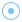
#
{kind=link}
此节点表示点力场。
General#
Force activity： 如果设为 false，该力会被忽略。
Tether Mask Shapes： 会将 Mask Shape 作为该力变换的子级。
Show Force Mask： 如果勾选，Mask Shape 会在视口中以绿色显示。这有助于预览力的作用位置。
Mode： 选择该力影响 Volume（体积）、Particles（粒子）还是二者。
Repel Strength： 围绕点向外排斥或向点吸引的强度。（正值会从点向外推，负值会向点拉近。）
Additional pressure rate： 附加压力速率。正值会爆开，负值会内爆。
- Falloff： 衰减表示该力只会影响距力位置一定距离内的模拟。使用衰减会明显减弱力，因此可能需要调整 Repel Strength 进行补偿。
None：无衰减，该力会影响整个模拟。
Linear：力强度线性衰减。
Quadratic：力沿二次（指数）曲线衰减，比线性衰减更快。
- Cubic：力沿三次曲线衰减。 Linear（线性）、Quadratic（二次）、Cubic（三次）和 Custom（自定义） 会显示以下参数：
Inverse falloff： 为 true 时，靠近力中心时力会减弱。
Falloff percent： 超过给定距离后保留的力的比例。
Falloff distance： 衰减距离，单位为米。
Falloff inner bound： 距力中心的距离，单位为米；在该距离处力最大。
- Custom：力沿指定指数衰减。
Falloff exponent： 衰减的曲线指数，值越高，力消失得越快。可将其视为曲线的 gamma 值。
Transform#
- Import control： 如果勾选，蓝色十字准星 Import control 引脚会显示在 Force: Point 节点上，允许将变换作为 Import 节点中的网格或骨骼的子级。在 Control 选项卡中，位于 Import 节点上，你可以勾选骨骼或网格来在该节点上创建输出引脚。此引脚可连接到 Import control 引脚。
Position： 显示父级网格或骨骼传入的位置。
Position, Rotation, Scale Inherit： 你可以切换 X、Y 和 Z 按钮，以指定传入变换中哪些属性和轴会被继承/使用。默认情况下所有按钮都会打开（蓝色），继承所有变换。
Position, Rotation offset： 对传入的位置和旋转值进行加减偏移。使用视口中的变换和旋转操控器时，这些值也会改变。
- Import control： 如果勾选，蓝色十字准星 Import control 引脚会显示在 Force: Point 节点上，允许将变换作为
Position： 点力场在 3D 空间中的中心。
References to the common tabs：
Chaos 为力场添加更多随机性和变化。
Masking 根据特定分量遮罩该力。
Visual 可视化此力添加的速度。仅当节点已连接、处于活动状态且被选中时有效。
Vector Field 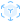
#
{kind=link}
此节点表示基于在 VectorayGen 中制作的矢量场的力。
Asset#
Filename： 指定 .fga 文件的文件名和位置。
Force activity： 如果设为 false，该力会被忽略。
Tether Mask Shapes： 会将 Mask Shape 作为该力变换的子级。
Show Force Mask： 如果勾选，Mask Shape 会在视口中以绿色显示。这有助于预览力的作用位置。
Mode： 选择该力影响 Volume（体积）、Particles（粒子）还是二者。
Strength： 矢量场相对于原始矢量幅度的强度。负值会翻转方向。如果效果过强，请尝试降低此值。
Size： 模拟空间中矢量场边界框的大小。注意，原始边界会被忽略。
Transform#
- Import control： 如果勾选，蓝色十字准星 Import control 引脚会显示在 Force: Vector Field（矢量场力） 节点上，允许将变换作为 Import 节点中的网格或骨骼的子级。在 Control 选项卡中，位于 Import 节点上，你可以勾选骨骼或网格来在该节点上创建输出引脚。此引脚可连接到 Import control 引脚。
Position： 显示父级网格或骨骼传入的位置。
Rotation： 显示父级网格或骨骼传入的旋转。
Position, Rotation, Scale Inherit： 你可以切换 X、Y 和 Z 按钮，以指定传入变换中哪些属性和轴会被继承/使用。默认情况下所有按钮都会打开（蓝色），继承所有变换。
Position, Rotation offset： 对传入的位置和旋转值进行加减偏移。使用视口中的变换和旋转操控器时，这些值也会改变。
- Import control： 如果勾选，蓝色十字准星 Import control 引脚会显示在 Force: Vector Field（矢量场力） 节点上，允许将变换作为
Position： 模拟空间中矢量场边界框中心的位置。（注意，原始边界会被忽略。）
Rotation： 矢量场分别沿 X、Y 和 Z 轴的旋转角度，单位为度。
Scale： 矢量场力的相对缩放。
Chaos 为力场添加更多随机性和变化。
Masking 根据特定分量遮罩该力。
在 Info 选项卡中包含已加载的 .fga 文件的信息。
Visual 可视化此力添加的速度。仅当节点已连接、处于活动状态且被选中时有效。
Vorticles 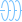
#
{kind=link}
Vorticles 是一种可放入模拟中的粒子，用于添加推动力和旋转力。
Main（主要）#
Force activity： 在模拟中启用 Vorticles。取消勾选会关闭该力。
View vorticles： 选中节点时显示 Vorticles。
Mode： 选择该力影响 Volume（体积）、Particles（粒子）还是二者。
Vorticles seed： 用于随机生成 Vorticles 的种子。
Vorticles count： 当前 Vorticles 数量。较高值表示场景中有更多 Vorticles。
Transform#
这些变换会应用到 Position spawn shape 参数定义的生成形状，该参数位于 Position 选项卡中。 Transform 选项卡中的控件在 Position spawn shape 设置为 FillVolume 时不起作用。。
- Import control： 如果勾选，蓝色十字准星 Import control 引脚会显示在 Force: Vorticles 节点上，允许将变换作为 Import 节点中的网格或骨骼的子级。在 Control 选项卡中，位于 Import 节点上，你可以勾选骨骼或网格来在该节点上创建输出引脚。此引脚可连接到 Import control 引脚。
Position： 显示父级网格或骨骼传入的位置。
Rotation： 显示父级网格或骨骼传入的旋转。
Position, Rotation, Scale Inherit： 你可以切换 X、Y 和 Z 按钮，以指定传入变换中哪些属性和轴会被继承/使用。默认情况下所有按钮都会打开（蓝色），继承所有变换。
Position, Rotation offset： 对传入的位置和旋转值进行加减偏移。使用视口中的变换和旋转操控器时，这些值也会改变。
- Import control： 如果勾选，蓝色十字准星 Import control 引脚会显示在 Force: Vorticles 节点上，允许将变换作为
Position： Vorticle 生成形状的位置。
Rotation： Vorticle 生成形状的方向。
Position#
- Position spawn shape： Vorticles 的生成形状（发射器形状）。
Fill Volume（填充体积）：Vorticles 会在边界框内随机生成。
- Box：Vorticles 在盒形内生成。该盒形的位置由 Position 参数指定，该参数位于 Main（主要） 选项卡中。
Size： 包含 Vorticles 的盒形大小。
Spawn on surface： 只在盒形表面生成 Vorticles。
- Sphere：Vorticles 在球形内生成。该球形的位置由 Position 参数指定，该参数位于 Main（主要） 选项卡中。
Radius： 包含 Vorticles 的球体半径。
- Line：Vorticles 会沿线形生成。该线的位置由 Position 参数指定，该参数位于 Main（主要） 选项卡中。
Length： Vorticles 生成所在直线的长度。
- Spiral：Vorticles 会沿螺旋形生成。该螺旋的位置由 Position 参数指定，该参数位于 Main（主要） 选项卡中。
Radius： 螺旋的半径。
Revolutions： 螺旋中的完整旋转圈数。
Height： 螺旋的高度。值为 0 时会得到一个圆。
Pinching： 螺旋的收缩程度。较高值会让螺旋顶部逐渐变尖。负值会让螺旋顶部变宽。
Randomize position： Vorticles 位置的随机化。例如，使用线形时，这会决定每个 Vorticle 的生成位置在各轴上可偏离线形的程度。
Advection intensity： Vorticles 随模拟一起移动的强度。
Orientation#
Orientation damping： 平滑 Vorticles 的方向变化。值为 100% 时方向保持静止。
- Orientation spawn type： Vorticles 的定向方法：
- Constant：方向设为固定值。
Orientation： Vorticles 的固定方向。例如，将 X 和 Y 设为 0，并将 Z 设为 1，会让所有 Vorticles 指向上方。
- Shape Aligned：Vorticles 会沿 Position spawn shape 定向。。
Orientation axis： 用于沿 Position spawn shape 定向的 Vorticle 轴。。
- Point to Center（指向中心）：Vorticles 会定向为指向中心。
Orientation axis： 用于朝向中心定向的 Vorticle 轴。
Random：完全随机化 Vorticles 的方向。
Invert direction： 反转 Vorticles 的力方向。
Randomize direction： 随机化 Vorticles 的力方向。
Randomize orientation： 方向随机化。较高值会让 Vorticles 的方向进一步偏离其对齐目标。
Life#
Min, Max life： Vorticles 的最短和最长生命周期。
Force#
Force attenuation： Vorticles 根据到自身中心距离生成的力的衰减曲线。值为 1 表示从中心（100%）到外边界（0%）线性衰减。大于 1 的值衰减更快，整体施加的力更少；小于 1 的值衰减更慢，整体施加的力更多。
Min, Max twist velocity： Vorticles 添加到模拟中的最小和最大旋转速度。负值会朝相反方向旋转。
Min, Max push velocity： Vorticles 的最小和最大推动速度。这会沿 Vorticle 的主轴推动（正值向一个方向推，负值向相反方向推）。
Size#
Vorticles min, max radius： Vorticles 的最小和最大半径（大小）。
- Min max usage： 不同大小的 Vorticles 在 Line 或 Spiral Position spawn shape 上的分布方式。:
Random：Vorticles 的大小随机分布。
Ramp Up（递增）：Vorticles 从小到大分布。
Ramp Down（递减）：Vorticles 从大到小分布。
Ramp Up Down（先递增后递减）：Vorticles 向中段从小到大分布，随后向末端从大到小分布。
Ramp Down Up（先递减后递增）：Vorticles 向中段从大到小分布，随后向末端从小到大分布。
Visual 可视化此力添加的速度。仅当节点已连接、处于活动状态且被选中时有效。
地面  #
#
这里包含与场景中可见地面平面相关的所有设置。
- Ground material： 场景中使用的地面类型：
None：禁用地面平面。
Grid（网格）：网格图案，中心线用红色和绿色表示 X 轴和 Y 轴。
Checkerboard：地面平面设为棋盘格图案。
Noise：地面平面设为噪声图案。
Uniform Color：地面平面设为纯色。
Ground distance： 模拟边界框底部与地面之间的距离，单位为米。
Ground lit radius： 地面上受光区域的半径。
Ground shadow： 地面阴影的强度。
Ground material scale： 地面图案的缩放，单位为每米图块数。这会同时缩放网格、棋盘格和噪声图案。
Ground primary color： 设置使用 Checkerboard时的其中一种颜色、使用 Noise时的其中一种颜色，以及使用 Uniform Color 或 Shadow Catcher 时使用的颜色。。
Ground secondary color： 设置使用 Checkerboard 或 Noise 时的另一种颜色。。
导入 #
此节点用于从其他 3D 软件包导入资产。
更多信息请阅读我们的 FBX、OBJ、ABC 导入 页面！
Asset#
Filepath： 指定包含 3D 资产的 .obj、.fbx 或 .abc 文件的文件名和位置。建议将这些文件存储在本地。如果从网络驱动器加载导入网格，可能会导致模拟和渲染不稳定。对于 Alembic，仅支持 OGAWA 格式！
Animations#
- Animate： 如果勾选，且模型包含动画，则会播放该动画。
Animations： 如果有多个动画层，可在这里选择所需的动画层。
Transform#
Pivot： 缩放前应用到导入内容位置上的偏移。
Master scale： 大尺度乘数，用于轻松将非常大或非常小的场景缩放到合适大小。
Scale： 常规缩放选项，用于微调导入资产的大小。
Position： 应用于导入资产位置的偏移。
Rotation： 应用于导入资产旋转的偏移。
Scale and center to fit： 此按钮可在加载资产后立即使用，自动将对象的缩放和位置适配到 EmberGen 场景中。
Auto pivot： 自动设置 Pivot 参数，使枢轴点位于导入网格形状的中心。
Playback#
Loop animation： 如果开启，动画会无限循环播放。
- Override FPS： 如果为 true，你可以定义每秒帧数。如果将此值设为 Timestep（默认为 60），导出结果应能在目标应用中对齐。也可以将 FPS 设为 30，并将 Timestep 保持为 60；但这样就需要把导出帧步长设为 2，才能在目标应用中对齐。
FPS： 用于替换导入器读取到的每秒帧数。
Frame delay： 动画延迟的帧数。负值会提前播放动画。
Duration offset： 用于修改动画时长的帧数。通过裁剪动画末尾，它可用于获得完美循环的动画。
Simulation#
Thickness emission, collision： 用于发射或碰撞的网格厚度。
Rendering#
Albedo： 导入网格着色器的主颜色。
Volumetric shading： 如果开启，网格会使用烟雾使用的体积着色显示；否则使用更传统的着色方式。 Albedo 参数仍然生效。
Lighting bias (vol.)： Lighting bias（光照偏移）是从表面访问光照贴图时使用的偏移，作用类似实时引擎中的 shadow bias（阴影偏移）。
Render all： 如果勾选，会渲染所有多边形。
Render mask 1,2,3,4： 如果勾选，对应 Mask 选项卡中指定的多边形会被渲染。这有助于清楚查看特定遮罩结果。
Control#
导入文件中的动画可用于驱动形状、力、发射器、碰撞体或模拟域的变换。
可按以下方式设置：
使用复选框选择要继承其变换的骨骼或网格。
带有对应名称的 control 输出引脚会添加到
Import 节点上。在要作为骨骼或网格子级的节点上勾选 Import control 参数。此参数通常位于 Transform 选项卡中；如果要控制模拟域，则位于 Domain 选项卡中。
此时 Import control 输入引脚会显示在该节点上。
将
Import 节点上的新 control 连接到目标节点上的 Import control 引脚。如有需要，可以使用目标节点上 Import control 参数下方的参数调整位置、方向以及要继承哪些变换属性。
Mask#
使用遮罩可以将导入内容的特定部分输出到 Mask 输出引脚。
- Mode： 定义导入内容的遮罩方式：
Meshes：这会提供一个清单，列出导入 3D 场景中的所有独立对象。勾选对象的复选框即可将其添加到遮罩。
Bones：这会提供一个清单，列出 3D 场景中的所有骨骼关节（如果有）。勾选某个关节后，与其关联的顶点会被添加到遮罩。
Vertex color - red, green, blue, alpha： 将具有此颜色的顶点添加到遮罩。大多数 3D 软件都可以为顶点分配顶点色。
Reference Value： 要包含在遮罩中的上述通道最小顶点颜色值。
灯光  #
#
用于照亮场景的一组节点！
Ambient  #
#
来自所有方向的光。此灯光可用于表示天空。
Active： 如果未勾选，此灯光会被忽略。
Ambient Intensity： 灯光的强度。负值会变暗。
Ambient color： 灯光颜色。
Occlusion color： 天空遮挡区域使用的遮挡颜色，即未暴露在天空下区域的阴影颜色。
Occlusion shadow intensity： 环境颜色的遮挡强度。较高值会让未暴露在天空下的区域产生更多遮挡。
Inherit sky color： 基于 Atmosphere color（位于 Skybox 节点中指定）和 Directional 灯光角度继承天空颜色。
Position： 灯光在 3D 空间中的位置。
Directional  #
#
来自指定方向的光。此灯光可用于表示太阳。
Active： 如果未勾选，此灯光会被忽略。
- Direction definition： 确定方向的方法。
- Angles：会显示 Azimuth 和 Elevation 参数，用于通过指定角度控制方向。
Azimuth： 灯光的旋转。它类似于控制太阳方向。
Elevation： 灯光的仰角。它类似于控制一天中的时间。
- Positions：会显示 Source position 和 Target position 参数，用于通过指定方向线上的两个点控制方向。
Source position： 光源在 3D 空间中的位置。
Target position： 灯光目标在 3D 空间中的位置。
Light intensity： 灯光的强度。负值会变暗。
Light color： 灯光颜色。
Inherit sun color： 太阳颜色继承。根据 Inherit sun color 的数值，灯光会基于其角度改变颜色。
Point  #
#
从空间中的一个点向所有方向发射的光。
Active： 如果未勾选，此灯光会被忽略。
Position： 灯光在 3D 空间中的位置。
Light intensity： 灯光的强度。负值会变暗。
Light color： 灯光颜色。
Bulb size： 灯泡大小。负值会产生更柔和的外观。
Spot  #
#
此节点表示聚光灯。光从空间中的一个点发出，并指向指定方向。
Active： 如果未勾选，此灯光会被忽略。
Position： 灯光在 3D 空间中的位置。
- Direction definition： 确定方向的方法。
- Angles：会显示 Azimuth 和 Elevation 参数，用于通过指定角度控制方向。
Azimuth： 灯光的旋转。
Elevation： 灯光的仰角。
- Positions：会显示 Target position 参数，用于通过指定聚光灯应瞄准的点来控制方向。
Target position： 灯光目标在 3D 空间中的位置。
Light intensity： 灯光的强度。负值会变暗。
Light color： 灯光颜色。
Cone angle： 灯光锥角的开口，单位为度。较高值会照亮更大的区域。
Penumbra angle： 半影角度，单位为度。较高值会增加投射圆形边缘的柔和度。
Bulb size： 灯泡大小。
调制器  #
#
大多数参数都可以由外部调制节点控制。
所有调制器都有一个输出 选项卡，可在其中管理所有已连接参数，并设置其数值范围；调制器节点的百分比会引用这些范围。
有关如何使用这些节点和输出 选项卡的详情，请查看我们的 调制参数 页面！
Constant（常量）  #
#
生成一个常量值信号，可发送到其他节点暴露为 pin 的参数。
通过将一个  Mod: Constant 节点连接到多个暴露为 pin 的参数，可在节点之间同步参数。
Mod: Constant 节点连接到多个暴露为 pin 的参数，可在节点之间同步参数。
- Mode： 指定下方数值参数的类型。不同模式更适合控制不同类型的参数。
Single Component： 将单个值作为信号输出。适合连接到滑块参数。Output 选项卡中的范围会从 -100% 映射为最小值，到 100% 映射为最大值。
Unsigned Single Component： 将单个值作为信号输出。适合连接到滑块参数。Output 选项卡中的范围会从 0% 映射为最小值，到 100% 映射为最大值。
Multi Component： 将三个不同的值作为信号输出。适合连接到位置、旋转或颜色等 3 向量参数。此模式也可用于连接范围滑块，其中 X 会映射到 min 值， Y 会映射到 max 值。Output 选项卡中的范围会从 -100% 映射为最小值，到 100% 映射为最大值。
Checkbox： 将单个布尔值作为信号输出。适合连接到复选框。未勾选会映射为未勾选；如果未连接到复选框，则映射为最小值。勾选会映射为勾选或最大值。
Value： 在输出 选项卡中指定的范围内，使用指定映射控制已连接参数的值。
Oscillator（振荡器） #
使用振荡器生成波形信号，该信号可发送到其他节点暴露为 pin 的参数。
{kind=link}
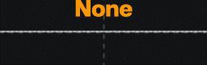
- Waveform X,Y,Z： 当链接到只有单个值的参数时，只有 Waveform X 有效。调制位置或旋转参数时，X,Y,Z 会链接到 X,Y,Z。调制颜色参数时，X,Y,Z 会链接到 R,G,B。可用波形类型如下：
None：无振荡；波形值会随时间保持恒定，并设为 Base 参数。
Sine：正弦波，平滑地来回振荡。
Saw：沿取模曲线振荡，数值会在每个周期突然重置为同一个值。
Pulse：在顶部值和底部值之间来回突然切换。
Noise：数值会以不规则方式变化。
Random Saw：数值会在每个周期上升到一个随机数。锯齿的高度各不相同。
Random Pulse：在随机顶部值和随机底部值之间来回突然切换。
Random Step：每个周期跳变到一个随机常量值。
- Custom：每个周期重复的自定义波形。
Custom Waveform： 横轴：每个周期内的时间；纵轴：数值。这里使用右键菜单中的 Curve Generator… 会尤其有用。有关如何编辑调制曲线的更多信息，请查看我们的调制曲线 部分！
Base： 参数的中心值。可用于偏移整条振荡曲线。
Frequency： 图案每秒重复的次数，即每秒周期数。较高值会让数值变化更快。
Phase： 波形的时间偏移。
Amount： 波形强度。值越高，振荡后的数值偏离基础值越远。
Attenuation： 所有波形的强度乘数。
Cycle（循环）  #
#
在输出参数的完整范围内输出持续线性增加（或减少）的值。此节点可用于快速设置自动旋转。
- Mode 1,2,3： 当链接到只有单个值的参数时，只有 Mode 1 有效。调制位置或旋转参数时，1,2,3 会链接到 X,Y,Z。调制颜色参数时，1,2,3 会链接到 R,G,B。可用模式如下：
None：值保持为 0。
Normal：数值沿锯齿波上升。
Inverted：数值沿锯齿波下降。
Frequency： 循环频率。用于旋转时，较高值会让对象旋转得更快。
Phase： 锯齿波的时间偏移。
Math（数学）  #
#
输出由数学表达式计算得到的信号。
Input A： 可在表达式中通过变量 a 引用的滑块。可使用 a.x、a.y 和 a.z 访问特定分量。
Input B： 可在表达式中通过变量 b 引用的滑块。可使用 b.x、b.y 和 b.z 访问特定分量。
Input C： 可在表达式中通过变量 c 引用的滑块。可使用 c.x、c.y 和 c.z 访问特定分量。
Expression 1： 第一个分量的表达式。
Expression 2： 第二个分量的表达式。
Expression 3： 第三个分量的表达式。
Time Shift（时间偏移）  #
#
将调制器信号在时间上向后或向前偏移。通常用于  Mod: Oscillator 或
Mod: Oscillator 或  Mod: Cycle 节点的输出信号。
Mod: Cycle 节点的输出信号。
Temporal Offset： 输入信号偏移的时间量，单位为秒。
Temporal Scale： 输入信号的时间重映射。例如，200% 会让输入正弦波振荡速度变为两倍。
Combine（组合）  #
#
组合来自两个调制器节点的信号。
Mode： 两个调制器信号的组合方式。
Mix： 两个输入的混合：-100% 表示仅使用第一个输入，100% 表示仅使用第二个输入；0% 表示二者等量混合。

ADSR  #
#
ADSR 节点允许将特定参数映射到 ADSR 包络。
ADSR 代表 Attack（起音）、Decay（衰减）、Sustain（延音）、Release（释音）。ADSR 节点的 Active 复选框开启后，包络会启用，并从 attack（起音）开始。Attack（起音）是指定参数的基础值达到峰值所需的时间，峰值由 Amount % 决定。Decay（衰减）是从峰值到 Sustain（延音）值所需的时间。Sustain（延音）是 Base 和 Amount 值之间的百分比，此值会保持不变，直到 ADSR 节点变为非活动。Active 布尔值关闭后，就会 release（释音）该包络。Release（释音）是 Sustain（延音）值回到 Base 值所需的时间。
通常的用法是将 MIDI 节点连接到 ADSR 节点中的 Active 参数。这样，每次触发 MIDI 音符时，它也会遵循 ADSR 包络曲线。不过，你也可以在时间轴中为此参数设置关键帧，或使用 oscillator 调制器节点来振荡激活状态。
Active： 会触发包络。启用时，包络进入 ADS；禁用时，包络进入 R。
Base： 由受控参数的边界决定，这是曲线的最低值，以 -100% 到 100% 的百分比表示。
Amount： 由受控参数的边界决定，这是最高值，以 -100% 到 100% 的百分比表示。
Attack： 指定参数的基础值达到峰值所需的时间，单位为秒，该峰值由 Amount。
Decay： 从峰值到 Sustain 值所需的时间，单位为秒。
Sustain： Sustain 是 Base 和 Amount 值之间的百分比，此值会保持不变，直到 ADSR 节点变为非活动。
Release： 一旦 Active 复选框关闭，你就会 release 该包络。 Release 是 Sustain 值回到 Base 值所需的时间，单位为秒。
Slope： 使用 slope（斜率）可以确定 Attack（起音）、Decay（衰减）和 Release（释音）曲线的斜坡。该斜坡可在 Envelope preview 中预览。
MIDI  #
#
根据按下键盘等 MIDI 控制器上的按钮来生成用于调制参数的信号。
要使用此功能，需要先勾选 Settings/Preferences/General/Enable MIDI support
Component count： 在 3 个输出（用于位置、旋转或 RGB）和单个输出之间切换。
MIDI Learn： 按下此按钮，然后使用所需的 MIDI 键来指定控制。
- Midi event： 选择会修改数值的事件类型。
- Note Trigger
 按下按钮时在信号上添加一个尖峰。
按下按钮时在信号上添加一个尖峰。 Note： 用于触发信号的 MIDI 音符。可以在这里手动设置，但使用 MIDI Learn 按钮自动设置会更容易。
- Note Trigger
- Control Change
 使用 MIDI 滑块或旋钮控制信号。
使用 MIDI 滑块或旋钮控制信号。 Control ID： 用于控制信号的 MIDI 按钮或旋钮。可以在这里手动设置，但使用 MIDI Learn 按钮自动设置会更容易。
- Control Change
Base： 参数的中心值。
Amount： 数值的信号修改量。值越高，信号变化越大。
Decay rate： 触发音符后数值的衰减速率。值越高，信号越快回到基础值。
Channel： 用于多个 MIDI 控制器。每个 MIDI 控制器都可以在硬件上设置为特定通道。此参数可用于识别特定 MIDI 控制器。值为 -1 时会使用所有 MIDI 控制器。
Attenuation： 所有信号的量乘数。
Last midi message： 显示最近的 MIDI 输入，例如音符或滑块变化。这在调试或手动设置 Note 或 Control ID 时会很有用。
场景  #
#
这里可以将视觉后处理效果应用到场景。
Tonemapping#
这里可以对场景应用基础颜色校正。
Gamma： 用于将图像从 HDR 转换到 LDR 的 gamma 校正。
Exposure： 场景曝光。默认值为 1.0，可根据场景整体明暗进行欠曝或过曝。
Color vibrance： 色彩鲜艳度。大于 0 的值会强调颜色色调，小于 0 的值可降低饱和度甚至反转颜色。
HDR Tonemapping： 用于从线性高动态范围转换的色调映射曲线。
Tonemap dithering： 色调映射抖动强度。提高此值有助于消除场景中的颜色条带。
Contrast： 颜色对比度校正强度。
Brightness： 颜色亮度校正强度。
Saturation： 颜色饱和度校正强度。
Colors#
Channels swizzling： 渲染通道的 swizzling（通道重排），基本上就是改变 R、G、B 分量的顺序。
Bloom Intensity： Bloom 后处理效果的强度。它会模糊场景中最亮的像素，并将其叠加回场景。
Bloom Radius： Bloom 后处理效果使用的模糊滤镜半径。
Vignetting#
Vignetting 会压暗图像边缘，让中心更突出。
Width： 暗角宽度，单位为像素。较高值表示更柔和的暗角。
Offset： 暗角向图像外侧的偏移，单位为像素。
Roundness： 暗角的圆度。
Intensity： 暗角强度。较高值表示边缘更暗。
Style#
- Rendering style： 场景中使用的渲染风格：
Realistic：不应用过滤。
- Pixelized：降低场景的渲染分辨率。这会显示以下参数：
Pixel size： 像素大小，单位为像素。较高值会得到更明显的像素化外观。
Alpha limit： 光线步进过程中单元透明度的限制。
Alpha sharpening： 光线步进过程中使用的 Alpha（透明度）锐化。0% 是常规 Alpha（透明度），100% 是更锐利的 Alpha（透明度）。
- Edge Detect Filter（边缘检测滤镜）：突出边缘，产生风格化效果。这会显示以下参数：
Display background： 如果启用，当选择非写实效果时会显示背景。
Edge color： 边缘颜色。
Edge ramp： 边缘检测阈值，较高值会检测更多边缘。
Detection type： 边缘检测方法。基于 Alpha 的方法只会检测外边界；Sobel 会在流体内部检测更多边缘。
Base color： 基础颜色的强度（除边缘以外所有内容的亮度）。边缘会叠加到此基础上。
- Chromatic Abberation：从图像边缘向每个颜色通道添加不同扭曲，让边缘产生彩虹般效果。这会显示以下参数：
Distortion： 色差扭曲强度。较高值会放大该效果。
iterations： 色差中使用的迭代次数。使用较高 Distortion 值时，较高迭代次数可减少阶梯感。
- Kuwahara：应用 Kuwahara 滤镜，使相近颜色形成色块。这会显示以下参数：
Kuwahara intensity： Kuwahara 过滤强度。0 会得到非常干净的外观。较高正值或负值会带来更多细节和锐利边缘。
- Anisotrophic Kuwahara（各向异性 Kuwahara）：此 Kuwahara 方法也可生成黑色边缘。这会显示以下参数：
Flow smoothness： 流动平滑度。较高值会在更大尺度上对齐数值，较低值会更局部地对齐数值。
Kuwahara radius 黑色笔触数量。
Kuwahara anisotropy： 彩色色块的各向异性。
- Colored Thin Strokes（彩色细笔触）：水彩外观风格。这会显示以下参数：
Flow smoothness： 流动平滑度。较高值会在更大尺度上对齐数值，较低值会更局部地对齐数值。
Strokes length： 笔触/线条长度。较高值会增加线条/笔触长度，较低值会缩短它们。较高值会产生更风格化的结果。
- Thick Strokes：灰度风格化效果，显示沿图像细节流向的大块高对比笔触。当细节较多时效果更好，例如渲染粒子时。这会显示以下参数：
Flow smoothness： 流动平滑度。较高值会在更大尺度上对齐数值，较低值会更局部地对齐数值。
Strokes width： “绘制”笔触宽度。低值会显示更密集、更小的笔触，较大值会显示更粗、更大的笔触。
Strokes length： “绘制”笔触的最大长度。
Contrast： 笔触对比度。较高值可让笔触更清晰。
Luminosity 笔触亮度。
- High Contrast Strokes（高对比笔触）：黑白风格化效果，显示沿图像细节流向的大块高对比笔触。这会显示以下参数：
Flow smoothness： 流动平滑度。较高值会在更大尺度上对齐数值，较低值会更局部地对齐数值。
Strokes thickness： “绘制”笔触厚度。
Strokes length： “绘制”笔触的最大长度。
Contrast： 笔触对比度。较高值可让笔触更清晰。
- Colored Thick Strokes（彩色粗笔触）：各向异性 Kuwahara 和粗笔触风格化的组合。这会显示以下参数：
Flow smoothness： 流动平滑度。较高值会在更大尺度上对齐数值，较低值会更局部地对齐数值。
Kuwahara radius 黑色笔触数量。
Kuwahara anisotropy： 彩色色块的各向异性。
Strokes length： “绘制”笔触的最大长度。
Contrast： 笔触对比度。较高值可让笔触更清晰。
Luminosity 笔触亮度。
Strokes width： “绘制”笔触宽度。低值会显示更密集、更小的笔触，较大值会显示更粗、更大的笔触。
RGB, Hue, Value, Saturation quantization： 场景颜色的 RGB 分量、色相、明度或饱和度可能值数量。值为 64 表示不进行量化。
Quantization dither： 用于补偿量化的抖动量。
Dithering mode： 使用的抖动图案。
Translucency limit： 决定 Translucency sharpening 的应用方式。较低值会将锐化限制在体积中最不透明的部分，得到更细微的结果。较高值会整体增强密度，产生卡通风格外观。
Translucency sharpening： 光线步进过程中烟雾/火焰/燃料透明度的锐化。较高值表示更强锐化。
- Remapping style： 将输入的 Color ramp 映射到图像的方法。此操作在所有后处理之后进行。
None：不进行重映射。
- Greyscale To Colorramp（灰度到色带）：使用此方法时，颜色会根据亮度（从暗到亮）从色带左侧映射到右侧。这会显示以下参数：
Dithering type： 使用的抖动图案。
Dithering intensity： 抖动图案强度。0 表示无抖动，大于 1 的值会产生更风格化的效果。
Pattern size： 抖动图案大小。
Remap ramp： 应用于 Color Gradient 的 gamma 校正。值为 1 表示线性插值。
- Use As Palette（用作调色板）：使用此方法时，颜色会映射到 Color Gradient（颜色渐变）中最相似的可用颜色。
Weight channels： 如果启用，会根据 RGB 通道的亮度对其加权。
着色  #
#
此节点包含与着色/光照相关的所有参数。
Lighting#
- Advanced parameters： 这会显示此选项卡和 Scattering 选项卡中的高级参数。它还会添加 AO (adv) 选项卡。此选项卡的高级参数为：
Volumetric shadow intensity： 阴影强度。
Shapes shadow intensity： 投射到形状上的阴影强度。
Shadow density clamping： 阴影使用的最大密度。
Shadowing sharpness： 光照/阴影的锐度。较高值会让亮部和阴影之间的对比更强。
Lighting anisotropy： 定义光照是否受视角方向影响。低值会保证无论摄像机朝向哪里光照都较为恒定；较高值会在摄像机透过烟雾朝向光源时提高着色亮度。
Ambient occlusion： Ambient occlusion 会计算每个体素暴露在环境光中的程度，并压暗暴露较少的区域。
Extinction color： 阴影颜色。
Smoke shadow density： 投射到烟雾上的阴影强度。
Smoke shadow intensity： 较低值会让光线穿过烟雾，从而降低阴影强度。
Scattering#
Direct light contribution： 直接光（除环境光以外的所有灯光）影响烟雾的量。较高值会让烟雾更亮。
Flames contribution： 火焰照亮烟雾的量。
Particles contribution： 当粒子设为 Emissive 或 Combustion，并且 Inject light in scattering（向散射注入光照） 在其 Rendering 选项卡中勾选时，此参数会控制粒子注入光照的强度。
Scattering radius（散射半径）： 散射传播半径。较高值会让光更深地渗入烟雾。
Scattering occlusion（散射遮挡）： 散射的遮挡/阴影。较高值会产生更暗且对比更强的阴影。
以下参数仅在 Advanced Parameters 于 Lighting 选项卡中勾选时显示：
Light attenuation： 多 octave 相位函数衰减。
Light contribution： 多 octave 相位函数贡献。
Phase attenuation： 多 octave 相位函数的相位衰减。
Lighting anisotropy： 散射相位函数的近似。较低值会让散射更均匀扩散；较高值会在透过烟雾朝光照方向观察时增强散射。
Octave count： 多 octave 相位函数的 octave 数量。
Shadow scattering： 阴影散射距离，单位为米。
Shadow softness： 阴影柔和度。较高值表示更发散的阴影。
Smoke scattering intensity（烟雾散射强度）： 烟雾内部光散射强度。
Shapes scattering intensity（形状散射强度）： 形状上的光散射强度。
Ground scattering intensity（地面散射强度）： 地面上的光散射强度。
Scattering occlusion attenuation（散射遮挡衰减）： 累积遮挡会随距离减弱。
Scattering tinting（散射染色）： 散射消光颜色。这会定义每个分量上的散射强度。
Cloud powder effect： Powder effect 倍增器。进入云体时会衰减散射，从而减少烟雾高光。
AO (adv)#
Ambient occlusion 会计算每个体素暴露在环境光中的程度，并压暗暴露较少的区域。
只有在 Advanced parameters 参数于 Lighting 选项卡中勾选时，才会显示此选项卡。 .. video:: _static/videos/AO.mp4
- presentation:
- float:
right
- width:
300
AO active： 启用 ambient occlusion。
AO overall intensity： 整体 ambient occlusion 强度。
Direct light occlusion scale： 直接光照中的 ambient occlusion 强度。
Direct light max occlusion： AO 导致的最大颜色衰减。值为 100% 时，遮挡强烈的区域会变黑。
Emissive occlusion scale： 自发光中的 ambient occlusion 强度。
Emissive max occlusion： AO 导致的最大颜色衰减。值为 100% 时，遮挡强烈的区域会变黑。
AO extinction tinting： Ambient occlusion 的消光颜色。
AO radius： 较高值会让变暗效果从凹陷处向外扩展。
Emissive Masking（自发光遮罩）#
Masking Active： 这会根据烟雾密度遮罩自发光/火焰。
Density reference： 遮罩使用的参考密度，接近此密度的值会被用作遮罩。
Width： 从 Density reference 开始的过渡宽度。较高值会得到更柔和的遮罩。
Masking ramp： 过渡宽度内的 gamma 插值。值为 1 时会在过渡宽度上线性过渡。
Masking intensity： 遮罩的强度/透明度。值为 0 会关闭遮罩。
Low frequencies： 低频细节对遮罩的贡献。
Medium frequencies： 中频细节对遮罩的贡献。
High frequencies： 高频细节对遮罩的贡献。
Flames#
Render flames： 启用火焰渲染。
有关如何使用直方图的详细信息，请查看我们的 直方图页面。
Coloring remap range： 颜色会映射到 Temperature range 上。
Coloring remap ramp： 从 Min 到 Max 的 gamma 插值，作用于 Temperature range。较高值会将颜色映射更多偏向颜色渐变左侧，较低值会将颜色映射更多偏向渐变右侧。
Clamp the remapping： 在给定数值范围内钳制数值。
Shaping by flames： 用于塑造火焰的火焰分量强度。较高值会得到更亮的火焰。
Shaping by density： 用于塑造火焰的密度分量强度。
- Flames coloring： 用于为火焰着色的技术。下拉菜单包含以下选项：
- Blackbody：使用黑体映射到温度颜色方案。使用此方法时无法选择火焰颜色。这会显示以下参数：
Blackbody ramp scale： 黑体颜色坡道缩放。较高值表示更亮的火焰。
- Color Ramp：使用基于一种颜色的可调色带。这会显示以下参数：
Fire color： 火焰颜色。
Red ramp： 红色分量坡道值。
Green ramp： 绿色分量坡道值。
Blue ramp： 蓝色分量坡道值。
- Exposed Color Gradient（公开颜色渐变）：使用此方法时，火焰颜色由 Color Gradient 节点控制。要连接此节点，请将 Color 输出引脚（位于 Color Gradient 节点上）连接到 Fire Color 输入引脚，该引脚位于 Shading 节点上。
Fire color： 用于火焰的颜色。当处于 Exposed Color Gradient 模式时，override 状态会锁定为 Pin Override，并暴露 Fire color 引脚；
应将 Color: Gradient 图标连接到该引脚。
- Flames translucency： 允许火焰最热部分具有透明度。勾选后会显示以下参数：
Translucency level： 高于此温度的火焰会变为透明。
Translucency width： 不透明与透明之间的过渡宽度。
Flames density min limit： 火焰的最低可见密度。渲染时会忽略低于该阈值的任何火焰密度。
Flames density scale： 火焰的不透明度/密度。较高值会得到更亮的火焰。
Flames opacity： 火焰不透明度。较高值会得到更亮的火焰。
Smoke#
Render smoke： 启用烟雾渲染。
Remap by temperature： 使用温度而不是密度重映射烟雾颜色。这也会将 Coloring remap 范围 Max 值改为 4500。
有关如何使用直方图的详细信息，请查看我们的 直方图 页面。
Coloring remap range： 用于映射颜色的密度或温度范围。
Coloring remap ramp： 从 Min 到 Max 的 gamma 插值，作用于该范围。较高值会将颜色映射更多偏向颜色渐变左侧，较低值会将颜色映射更多偏向渐变右侧。
- Smoke coloring： 用于为烟雾着色的技术。下拉菜单包含以下选项：
- Single Color：使用 Smoke color 参数设置单一烟雾颜色。
Smoke color： 用于烟雾的颜色。
- Color Ramp：使用基于两种颜色的可调色带。这会显示以下参数：
Min color： 用于稀薄/浅色烟雾的颜色。
Max color： 用于浓厚/高密度烟雾的颜色。
Red ramp： 红色分量坡道值。
Green ramp： 绿色分量坡道值。
Blue ramp： 蓝色分量坡道值。
- Exposed Color Gradient（公开颜色渐变）：使用此方法时，烟雾颜色由 Color Gradient 节点控制。要连接此节点，请将 Color 输出引脚（位于 Color Gradient 节点上）连接到 Smoke Color 输入引脚，该引脚位于 Shading 节点上。
Smoke color： 用于烟雾的颜色。当处于 Exposed Color Gradient 模式时，override 状态会锁定为 Pin Override，并暴露 Smoke color 引脚；
应将 Color: Gradient 图标连接到该引脚。
Smoke density min limit： 烟雾的最低可见密度。渲染时会忽略低于该阈值的任何烟雾密度。
Smoke density clamp： 渲染时允许的最大烟雾密度，高于该阈值的任何密度都会钳制到该值。
Smoke density scale： 烟雾的不透明度/密度。
Fuel#
在大多数模拟中，燃料会在发射后很快被点燃。因此它在场景中的密度往往很低，不易看见。可通过将 Fuel density min limit 设为 0%，并将 Fuel density scale 设为 1000% 这样的高值来增强可见性。
- Render fuel： 启用燃料渲染。这会显示以下参数：
Fuel color： 燃料颜色。
Fuel density min limit： 燃料的最低可见密度。渲染时会忽略低于该阈值的任何燃料密度。
Fuel density scale： 燃料的不透明度/密度。
Rendering#
Raymarch sharpening： 在光线步进时应用锐化滤镜。数据在遍历 3D 数据到渲染器时被锐化。它以亚体素精度突出小细节并强调边缘。注意，与 Volume 节点中的 sharpen 滤镜不同，此效果不会随 VDB 导出。
Smoke, Flames, Temperature sharpening： Smoke（烟雾）、Flames（火焰）或 Temperature（温度）通道上的锐化效果强度。
形状  #
#
Primitive  #
#
此节点表示一个形状图元。
General#
Shape Activity： 如果设为 false，该形状会被忽略。
- Type： 此形状使用的图元类型：
- Sphere
 只能进行均匀缩放的球形。
只能进行均匀缩放的球形。 Radius： 该 Sphere 形状的半径，单位为米。值越高，球体越大。
Fill motion gaps： 将 Sphere 形状替换为圆角锥形；第一个球体使用上一帧的形状位置和缩放，第二个球体使用当前帧的形状位置和缩放。这会填补快速运动在帧间造成的间隙，并可减少发射中的阶梯感。
- Sphere
- Box
 可沿三个轴缩放的立方体：
可沿三个轴缩放的立方体： Size： 该 Box 形状的大小，单位为米。
- Box
- Rounded Box 可在边缘指定圆角的立方体：
Size： 该 Rounded Box 形状的大小，单位为米。
Bevel： The bevel of a Rounded Box 形状的倒角。较高值会得到更圆的边缘。
- Rounded Box
- Capsule
 上下为球形端部的圆柱状形状：
上下为球形端部的圆柱状形状： Length： 该 Capsule 形状的长度，单位为米。
Radius： 该 Capsule 形状的半径或厚度。
- Capsule
- Torus
 由两个半径控制的甜甜圈形状：
由两个半径控制的甜甜圈形状： Minor Radius： Torus 形状的主半径，也就是到主环中心的距离。
Major Radius： Torus 形状的次半径，也就是沿主环挤出的圆形半径。
- Torus
- Cylinder
 圆柱条形：
圆柱条形： Radius： 该 Cylinder 形状的半径或厚度。
Height： 该 Cylinder 形状的高度或长度。
- Cylinder
- Rounded Cylinder 可对边缘倒角的圆柱：
Radius： 该 Rounded Cylinder 形状的半径或厚度。
Height： 该 Rounded Cylinder 形状的高度或长度。
Bevel： The bevel of a Rounded Cylinder 形状的倒角。
- Rounded Cylinder
- Tube
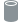
内部中空的圆柱： Radius： The outer radius or thickness of a Tube 形状的外半径或厚度。
Height： 该 Tube 形状的高度或长度。
Cap One： 闭合底部。
Cap Two： 闭合顶部。
Thickness： The thickness of a Tube 形状的厚度。
- Tube
- Cone
 顶部和底部半径可调的圆柱：
顶部和底部半径可调的圆柱： Radius One： 该 Cone 形状第一个端盖（底部）的半径。
Radius Two： 该 Cone 形状第二个端盖（顶部）的半径。
Height： 该 Cone 形状的高度。
- Cone
- Rounded Cone 两个连接的球体。适合创建泪滴状形状：
Radius One： 该 Cone 形状第一个端盖（底部球体）的半径。
Radius Two： 该 Cone 形状第二个端盖（顶部球体）的半径。
Height： 该 Cone 形状的高度，即球体之间的距离。
- Rounded Cone
- Ellipsoid
 可沿三个轴缩放的球体：
可沿三个轴缩放的球体： Radius： 椭球形状沿 X、Y、Z 轴的半径。
- Ellipsoid
- Hemisphere
 被切成两半的球形！
被切成两半的球形！ Radius： The radius of a the Hemisphere 形状的半径，单位为米。较高值会得到更大的半球。
- Hemisphere
- Spiral
 向上盘旋的弹簧状形状。
向上盘旋的弹簧状形状。 Radius： 螺旋最宽部分的半径，单位为米。
Revolutions： 曲线到达顶部前绕完整圆的次数。较高值会得到更密集的形状。
Height： Height of the Spiral 形状的高度，单位为米，从底部开始缩放。
Pinching： Tapering of the Spiral 形状的锥缩百分比。较高值会缩小螺旋顶部，使其更接近圆锥形；负值会放大螺旋顶部。
- Spiral
{kind=link}
Transform#
- Import control： 如果勾选，蓝色十字准星 Import control 引脚会显示在 Shape: Primitive 节点上，允许将变换作为 Import 节点中的网格或骨骼的子级。在 Control 选项卡中，位于 Import 节点上，你可以勾选骨骼或网格来在该节点上创建输出引脚。此引脚可连接到 Import control 引脚。
Position： 显示父级网格或骨骼传入的位置。
Rotation： 显示父级网格或骨骼传入的旋转。
Position, Rotation, Scale Inherit： 你可以切换 X、Y 和 Z 按钮，以指定传入变换中哪些属性和轴会被继承/使用。默认情况下所有按钮都会打开（蓝色），继承所有变换。
Position, Rotation offset： 对传入的位置和旋转值进行加减偏移。使用视口中的变换和旋转操控器时，这些值也会改变。
- Import control： 如果勾选，蓝色十字准星 Import control 引脚会显示在
Position： 形状的局部位置。
Rotation： 形状的旋转角度，单位为度。
Burst #
{kind=link}
此节点可以快速生成各种形状。它特别适合制作好看的爆炸形状。
Main（主要）#
Shape Activity： 如果设为 false，该形状会被忽略。
Amount of shapes： 每次 burst 中要生成的形状数量。
Random seed： 用于随机化的种子。不同数字会产生外观不同的 burst。
- Emission type： 定义发射是单次 burst 还是无限重复的 burst：
- Single Burst：
Trigger： 当从 false 变为 true 时，会触发 burst（突发）。使用关键帧可以指定 burst（突发）开始的时间点。
- Repeated Bursts：
Burst duration： 整个 burst 动画的持续时间。
Burst Interval： 每次 burst 之间的时间，单位为秒。值为 0 会产生连续 burst。
Range of shapes duration： 形状完成一次完整扩展所需的最短和最长时间，即生长形状的动画长度。
Transform#
此选项卡决定 Positions 选项卡中设置的分布形状的原点和方向。
- Import control： 如果勾选，蓝色十字准星 Import control 引脚会显示在 Shape: Burst 节点上，允许将变换作为 Import 节点中的网格或骨骼的子级。在 Control 选项卡中，位于 Import 节点上，你可以勾选骨骼或网格来在该节点上创建输出引脚。此引脚可连接到 Import control 引脚。
Position： 显示父级网格或骨骼传入的位置。
Rotation： 显示父级网格或骨骼传入的旋转。
Position, Rotation, Scale Inherit： 你可以切换 X、Y 和 Z 按钮，以指定传入变换中哪些属性和轴会被继承/使用。默认情况下所有按钮都会打开（蓝色），继承所有变换。
Position, Rotation offset： 对传入的位置和旋转值进行加减偏移。使用视口中的变换和旋转操控器时，这些值也会改变。
- Import control： 如果勾选，蓝色十字准星 Import control 引脚会显示在 Shape: Burst 节点上，允许将变换作为
Position： 分布形状在 3D 空间中的位置。
Rotation： 分布形状的方向。
Positions#
- Distribution shape： 生成形状的发射形状：
Box Random：形状会在盒形内随机生成。
Box Evenly Distributed On X,Y,Z（盒形按 X/Y/Z 均匀分布）：形状会在盒形内随机生成，但会沿指定轴均匀分布。这可以减少指定轴上的堆积。
Ellipsoid Random：形状会在椭球（球状）形状内随机生成。
Ellipsoid Evenly Distributed（椭球均匀分布）：形状会在椭球（球状）形状内均匀分布。
Extend on X,Y,Z-axis： 沿指定轴扩展生成区域。这会决定生成立方体或椭球的缩放。较高值表示形状之间有更大间距。
Shapes#
- Trigger order： 形状生成的顺序：
Evenly Distributed：形状会在发射器形状上均匀触发。
Random：形状会在发射器形状上随机触发。
Center To Outside（从中心到外侧）：形状先在发射器形状中心触发，然后向外移动。
Outside to Center（从外侧到中心）：形状先在发射器形状边缘触发，然后向内移动。
X,Y,Z Axis Upward（沿 X/Y/Z 轴向上）：形状会从轴的负向一侧触发到正向一侧。
X,Y,Z Axis Downward（沿 X/Y/Z 轴向下）：形状会从轴的正向一侧触发到负向一侧。
Simultaneous：所有形状会同时触发。
Initial radius： 生成形状的半径/大小范围。
- Size distribution： 不同大小的形状在空间中的分布方式：
Evenly Distributed：不同大小的形状会在发射形状上均匀分布。
Random：不同大小的形状会在发射形状上随机分布。
Center To Outside（从中心到外侧）：大形状会在中心生成，小形状会在发射形状外侧生成。
Outside To Center（从外侧到中心）：大形状会在外侧生成，小形状会在发射形状中心生成。
X,Y,Z Axis Upward（沿 X/Y/Z 轴向上）：小形状会出现在轴的负向一侧，大形状会在轴的正向一侧生成。
X,Y,Z Axis Downward（沿 X/Y/Z 轴向下）：小形状会出现在轴的正向一侧，大形状会在轴的负向一侧生成。
Range of expansion： 形状的最小和最大扩展。较高值表示形状可长得更大。这也是 Remapping curve。
- Shape type：
Sphere：默认生成球体。
- Cylinder：
Thickness is relative： 勾选后，圆柱长度会相对于形状缩放。
Relative thickness：（仅在勾选 Thickness is relative 时可用）圆柱长度乘数。较高值会得到更高的圆柱。
Absolute thickness（仅在勾选 Thickness is relative 时可用）所有圆柱的固定厚度（高度/长度）。
Shape rotation： 圆柱的旋转。
Rotation randomness： 圆柱旋转的随机化。较高值会让每个圆柱相对整体旋转差异更大。
- Ring：
Thickness is relative： 勾选后，环的长度会相对于形状缩放。
Relative thickness：（仅在勾选 Thickness is relative 时可用）环长度乘数。较高值会得到更高的环。
Absolute thickness（仅在未勾选 Thickness is relative 时可用）所有环的固定厚度（高度/长度）。
Shape rotation： 环的旋转。
Rotation randomness： 环旋转的随机化。较高值会让每个环相对整体旋转差异更大。
- Hollow Sphere：看起来像球体，但内部中空。这样可以用更明确的流体发射量创建更大的形状。
Width is relative： 勾选后，球壁宽度会相对于形状缩放。
Relative width：（仅在勾选 Width is relative 时可用）球壁宽度乘数。
Absolute width（仅在未勾选 Width is relative 时可用）所有球壁的固定宽度。
- Spike：
Thickness is relative： 勾选后，尖刺厚度会相对于形状缩放。
Relative thickness：（仅在勾选 Thickness is relative 时可用）尖刺厚度乘数。较高值会得到更粗的尖刺。
Absolute thickness（仅在未勾选 Thickness is relative 时可用）所有尖刺的固定厚度。
Shape rotation： 尖刺的旋转。
Rotation randomness： 尖刺旋转的随机化。较高值会让每个尖刺相对整体旋转差异更大。
Velocity injection： 因形状缩放而注入模拟的力的量。此值会与 Velocity transfer 参数一起作为乘数使用，该参数位于 Forces 选项卡中，属于 Emitter 节点。
Particles  #
#
此节点表示基于粒子系统的形状。
Main（主要）#
Shape activity： 如果设为 false，该形状会被忽略。
Position： 网格形状的局部位置。
Rotation： 网格形状的局部朝向，按每个旋转轴的度数表示。
Seed： 每个唯一的种子（数字）都会为粒子提供唯一的随机化结果。
Transform#
此选项卡决定粒子发射器的原点和朝向。
- Import control： 如果勾选，蓝色十字准星 Import control 引脚会显示在 Shape: Particles 节点上，允许将变换作为 Import 节点中的网格或骨骼的子级。在 Control 选项卡中（位于 Import 节点），你可以勾选骨骼或网格来在该节点上创建输出引脚。此引脚可连接到 Import control 引脚。
Position： 显示父级网格或骨骼传入的位置。
Rotation： 显示父级网格或骨骼传入的旋转。
Position, Rotation, Scale Inherit： 你可以切换 X、Y 和 Z 按钮，以指定传入变换中哪些属性和轴会被继承/使用。默认情况下所有按钮都会打开（蓝色），继承所有变换。
Position, Rotation offset： 对传入的位置和旋转值进行加减偏移。使用视口中的变换和旋转操控器时，这些值也会改变。
- Import control： 如果勾选，蓝色十字准星 Import control 引脚会显示在
Position： 粒子发射器在 3D 空间中的位置。
Rotation： 粒子发射器形状的朝向。它可用于决定粒子的方向。
Emission#
Emission： 将此项切换为 on 时会触发一次粒子突发发射，条件是 Spawn type 设置为 Single Burst。
- Spawn type：
- Single burst（单次突发）：需要先将开关从 Off 切到 On 才会开始发射。只会生成一次粒子突发。
Burst size： 每次突发生成的粒子数量。
- Multi burst：按指定时间间隔重启粒子系统。每到一个时间间隔都会生成一次粒子突发。
Burst size： 每次突发生成的粒子数量。
Time between bursts： 两次连续突发之间的时间。
- Continuous：按指定速率持续发射粒子。
Spawn rate： 每秒发射的粒子数量。
- Initial position Type：
Center Position：粒子只会从 Particles 节点的中心位置点生成。
- Range：粒子会在盒形范围内生成。
Initial pos range： 指定发射盒在所有轴向上的缩放。
Position on surface： 如果开启，初始位置（生成位置）只会位于发射盒表面；否则位置会位于盒内部。
- Sphere：粒子会在球形范围内生成。
Initial pos radius： 初始位置球体半径，即发射球的半径。
Position on surface： 如果开启，初始位置（生成位置）只会位于发射球表面；否则位置会位于球内部。
Life range： 粒子生命范围，单位为秒。值越低，粒子越早消失。
Motion#
- Initial speed Type： 初始速度的随机化类型。
- Velocity Range：每个粒子的初始速度会在每个轴向的最小速度和最大速度之间随机选取。
Min speed： 粒子的最小初始速度，单位为米/秒。
Max speed： 粒子的最大初始速度，单位为米/秒。
Extreme speed： 仅使用极限速度。方向仍由 Min Speed 和 Max Speed 参数指定，但所有速度都会设置为最大值。
- Velocity Cone：粒子会以锥形发射出去。
Cone direction： 锥体的朝向。例如，当 X 和 Y 为 0 且 Z 为 1 时，锥体会竖直向上。若 X 和 Z 都为 1，锥体会指向 45 度角。
Cone spreading： 锥体开口角度，单位为度。值越高，粒子会向更宽的方向范围发射。
- Velocity From Position（从位置生成速度）：粒子会根据其初始位置向外发射。此模式需要 Initial position type 在 Emission 选项卡中设置为 Range 或 Sphere。如果设置为 Center Position，粒子只会直接向下落。
Min speed： 粒子的最小初始速度。
Max speed： 粒子的最大初始速度。
Speed scale： 速度缩放乘数。值越高，所有粒子移动越快。
Dragging range： 粒子的拖曳量，会让粒子随时间减速。值越高，拖曳越强。
- Modulate drag by life： 根据粒子生命调制拖曳量。
Interpolation mode： 用于在 Drag scale by life 曲线的点之间进行插值的方法。
Drag scale by life： 水平轴表示粒子生命（左侧出生，右侧死亡），垂直轴表示拖曳量。
Force injection： 粒子速度注入到模拟中的百分比。此值会与 Velocity transfer 参数一起作为乘数使用；它在 Forces 选项卡中（位于 Emitter 节点）。
Gravity： 粒子的重力影响。值越低，向下的力越强。
Min, Max init rotational speed： 每个粒子的旋转速度会从此范围内选取。旋转速度会把来自粒子的旋转力加入模拟中。它会乘以多个因素。如果其中任一因素为 0，模拟中都不会添加旋转力。未得到任何结果或结果不符合预期时，请务必检查这些因素。粒子大小、此参数指定的旋转速度、 Force injection 和 Velocity transfer（在已连接的 Forces 选项卡中指定，该选项卡位于 Emitter 节点）。
Advection intensity： 模拟对粒子的影响量。这意味着粒子会随其他发射器产生的效果一起移动，并受到力的影响。
- Modulate advection by life（按生命周期调制平流）： 根据粒子生命调制平流强度。
Interpolation mode： 用于在 Advection scale by life（按生命周期缩放平流） 曲线的点之间进行插值的方法。
Advection scale by life（按生命周期缩放平流）： 水平轴表示粒子生命（左侧出生，右侧死亡），垂直轴表示平流量。
Tightness intensity： 粒子的 Tightness（贴合度）强度。高 Tightness（贴合度）会将速度场作为速度使用，低 Tightness（贴合度）会将其作为加速度使用。
- Modulate tightness by life： 根据粒子生命调制 Tightness 强度。
Interpolation mode： 用于在 Tightness scale by life 曲线的点之间进行插值的方法。
Tightness scale by life： 水平轴表示粒子生命（左侧出生，右侧死亡），垂直轴表示 Tightness 量。
Chaos range： 添加到粒子上的混沌运动量会在此范围内随机选取，单位为米/秒。值越高，混沌运动（湍流）越强。
- Modulate chaos by life： 根据粒子生命调制混沌运动。
Interpolation mode： 用于在 Chaos scale by life 曲线的点之间进行插值的方法。
Chaos scale by life： 水平轴表示粒子生命（左侧出生，右侧死亡），垂直轴表示 Chaos 量。
Shape#
- Render with capsules： 使用胶囊体渲染粒子以填补粒子间空隙。由于粒子会变得更长，这会带来更连续的发射效果和更好看的拖尾。
Capsules stretching： 基于速度拉伸胶囊体。值越高，粒子越长。
Size range： 粒子的大小（米）会在此范围内随机选取。
- Modulate size by life： 根据粒子生命调制粒子大小。
Interpolation mode： 用于在 Size scale by life 曲线的点之间进行插值的方法。
Size scale by life： 水平轴表示粒子生命（左侧出生，右侧死亡），垂直轴表示大小。
Collisions#
- Collisions： 粒子可以与 Collider 节点指定的形状或边界框侧面发生碰撞。可使用以下方法：
Ignore：不计算碰撞，粒子会直接穿过。
Kill：粒子碰撞时会被杀死（消失）。
Kill And Generate Impacts（杀死并生成冲击）：粒子碰撞时会被杀死（消失），并生成一个 impact shape（冲击形状）。impact shape（冲击形状）是在碰撞位置弹出的球形形状。它可作为发射来源，用于创建专门发生在碰撞冲击处的效果。impact shape（冲击形状）会从 Impact shape 引脚输出，该引脚位于 Particles 节点。
Collide：粒子碰撞时会弹开。
Collide And Generate Impacts（碰撞并生成冲击）：粒子会在碰撞时弹开，并生成一个 impact shape（冲击形状）。
Friction： 粒子在碰撞体上的摩擦力。值越高，粒子与碰撞表面交互时减速越明显。
Bounciness： 粒子的弹性。值越高，反弹越强。
Velocity transfer： 将速度从碰撞体传递给粒子。使用移动碰撞体时，这可以带来更真实的结果。
Impact decay time： impact shape 动画的持续时间。
Impact scale： impact shape 的缩放。
Impact scale by velocity： 碰撞时速度更高的粒子会产生更大的 impact（冲击）。缩放会乘以速度。这意味着 impact scale（冲击缩放）可能会变得很大，你可能需要将 Impact scale 参数调低以补偿。
Impact life reduction： 碰撞时要移除的剩余粒子生命百分比。100% 表示粒子会在碰撞时死亡。
Impact life reduction by velocity： impact 发生时，速度更高的粒子会损失更多预期寿命。
Noise 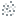
#
{kind=link}
此节点表示基于噪声场的发射器形状。
Shape activity： 如果设为 false，该形状会被忽略。
Scale： 噪声的缩放。值越高，形状/细节越大。
Seed： 每个种子都会生成唯一的噪声。
Octaves： 噪声层数；octaves（倍频层）越多，噪声越细致。
Lacunarity： 两个连续 octaves（倍频层）之间的缩放比例。
Gain： 两个连续 octaves（倍频层）之间的振幅比例。值为 0 时不会显示额外 octaves（倍频层）；值为 2 时只会显示最新的额外 octave（倍频层）。
Amplitude： 生成噪声的振幅。
Bias： 噪声表面的偏置。负值会产生更多孔洞，正值会让形状更饱满。
Animation speed： 噪声的动画速度。0 表示静态噪声。
Transform 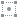
#
{kind=link}
变换传入的形状。
请注意，此节点可以有多个输入形状，因此也可用于轻松组合形状。
Shape Activity： 取消勾选会关闭传入的形状。
- Import control： 如果勾选，蓝色十字准星 Import control 引脚会显示在 Shape: Transform 节点上，允许将变换作为 Import 节点中的网格或骨骼的子级。在 Control 选项卡中（位于 Import 节点），你可以勾选骨骼或网格来在该节点上创建输出引脚。此引脚可连接到 Import control 引脚。
Position： 显示父级网格或骨骼传入的位置。
Rotation： 显示父级网格或骨骼传入的旋转。
Position, Rotation, Scale Inherit： 你可以切换 X、Y 和 Z 按钮，以指定传入变换中哪些属性和轴会被继承/使用。默认情况下所有按钮都会打开（蓝色），继承所有变换。
Position, Rotation offset： 对传入的位置和旋转值进行加减偏移。使用视口中的变换和旋转操控器时，这些值也会改变。
- Import control： 如果勾选，蓝色十字准星 Import control 引脚会显示在 Shape: Transform 节点上，允许将变换作为
Position： 应用于所有传入形状的位置偏移，单位为米。
Rotation： 应用于所有传入形状的旋转偏移，单位为度。
Blend 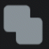
#
{kind=link}
此节点会将多个形状混合成一个形状。
Shape activity： 如果设为 false，该形状会被忽略。
- Type： 已连接的形状会使用所选运算符进行混合：
Union（并集）
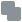
合并 Shape A 和 B。Intersection（交集）
 得到以下两者之间的相交区域： Shape A 和 B。
得到以下两者之间的相交区域： Shape A 和 B。- Smooth Intersection（平滑交集） 得到以下两者之间的相交区域： Shape A 和 B，并可选择平滑连接区域。
Smoothness： 边界的平滑度；值越高，连接区域越大。
- Smooth Intersection（平滑交集）
- Add（添加）
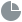
此运算符用于在 Shape A 中创建凹坑，方法是使用 Noise 形状作为 Shape B。 Range： 从 Noise 形状中使用的值范围。值越高，凹坑越平滑且略大。
Bias： 这会偏移切除表面。值越高，凹坑越小。
Amplitude： 凹坑深度。负值会将凹坑反转为凸起。
- Add（添加）
- Morph（变形）
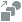
将 Shape A 变形为 Shape B。 Weight： 混合权重：0 表示 Shape A，1 表示 Shape B。
- Morph（变形）
{kind=link}
{kind=link}
{kind=link}
{kind=link}
Modifier 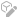
#
{kind=link}
此节点允许修改形状。
它应在节点图中按如下方式连接。

Shape activity： 如果设为 false，该形状会被忽略。
- Type： 修改器类型。
- Rounding：为形状添加额外厚度，使其更圆润。
Thickness： 添加到形状上的额外厚度。值越高，形状越大且越圆润。
- Golf ball：在形状表面添加凹痕图案。
Frequency： 凹痕频率。值越高，凹痕越多；值越低，凹痕越大。
Amplitude： 效果强度。值越高，凹痕越深。负值会生成凸起图案。
- Invert：这会把所有空白空间变为形状体素，并把所有形状体素变为空白空间。
Offset： 值越高，形状会收缩并留下更小的孔洞。负值会增长并圆滑形状，留下更大的孔洞。
- Shell：这会将形状变为壳层而非实心体素，使其内部中空。
- Direction： 壳层应从形状表面向哪个方向扩展。
Inward： 向形状内部扩展壳层。使用此方法时，从外部看不到形状变化。
Centered： 向形状内外两个方向等量扩展壳层。
Outward： 向形状外部扩展壳层。
Thickness： 形状表面的厚度。
Simulation #
此节点包含与模拟全局物理相关的所有设置。
Domain#
请查看我们的 Voxels 部分，了解体素说明。
Current Size： 显示计算出的体素数量。
Voxel count： 这会同时决定模拟的体素分辨率以及边界框大小。单个体素占据的空间由 Voxel size（体素大小）参数定义。
Voxel size： 单个体素单元的大小，单位为米。
Upscaling： 模拟的升采样系数：这会提高模拟细节，同时保持原始形状。选项包括 x2（数据和速度使用 8 倍内存）、x3（27 倍内存）和 x4（64 倍内存）。
Fast upscaler： 不带平流的升采样，只是从低分辨率进行粗略升采样。只有遮罩阶段会在高分辨率下执行。可用于细化火焰，同时避免添加不需要的细节。
Zero position on X, Y, and Z： 用于计算体素的原点。
例如，当 Z 轴的 Zero position（零点位置）使用 Min 时，该轴的原点位于边界框底部。这意味着添加体素时，它们会添加到边界框顶部。如果 Z 轴的 Zero position（零点位置）设为 Center，体素会等量添加到顶部和底部。
- Import control： 如果勾选，蓝色十字准星 Import control 引脚会显示在 Simulation 节点上，允许将边界位置作为 Import 节点中的网格或骨骼的子级。在 Control 选项卡中（位于 Import 节点），你可以勾选骨骼或网格来在该节点上创建输出引脚。此引脚可连接到 Import control 引脚。
Position： 显示父级网格或骨骼传入的位置。
Position, Rotation, Scale Inherit： 你可以切换 X、Y 和 Z 按钮，以指定传入变换中哪些属性和轴会被继承/使用。默认情况下所有按钮都会打开（蓝色），继承所有变换。
Position offset： 对传入的位置和旋转值进行加减偏移。使用视口中的变换和旋转操控器时，这些值也会改变。
- Import control： 如果勾选，蓝色十字准星 Import control 引脚会显示在
Bounds Position： 决定模拟边界范围的域在 3D 空间中的位置。更改或为其设置动画，可帮助模拟更贴合对象以优化性能。
Simulation#
- Simulation Mode： 模拟模式：
Combustion：Combustion 模式包含烟雾、燃料、温度和火焰。燃料燃烧会产生热量/温度，不完全燃烧会产生烟雾。
- Colored Smoke：仅包含密度和 RGB 颜色，没有温度。此方法会移除 Combustion（燃烧）选项卡，并添加以下参数：
Color Diffusion Speed：（位于 Diffusion 选项卡）颜色扩散，以相邻值的百分比表示。值越高，颜色混合越快。负值可以产生锐化效果。
- Velocity, Voxel Advection method（速度、体素平流方法）： 决定速度或体素密度（烟雾、火焰、燃料、温度）如何平流，也就是如何把这些数据从一个体素传输到下一个体素。
Linear：比 Cubic 更快，但会造成速度涂抹和平滑，表现为速度的人为耗散和涡旋抑制。（细节和蓬松感较少）
Cubic：速度较慢，但质量高得多，可减少人为耗散并更好地保留涡旋。如果噪声较多、存在像粒子这样的高频注入图案、 Vorticity 调得过高，或 Advection Accuracy 为一阶，Cubic 模式可能会出现一些伪影。
Prevent Velocity, Voxel Overshoots（防止速度、体素过冲）：
Advection accuracy： 决定平流回溯时使用的精度阶数。低阶比高阶更快，但精度较低。
Advection offset： 允许模拟的平流部分以恒定速度滚动数据。值为 1 表示每秒移动 1 个体素。这非常适合模拟风向。
Time Control#
- Looping Mode： 当前模拟循环模式：
No Looping：模拟按正常时间向前推进。
- Loop Simulation（循环模拟）：会尝试将模拟转换为可循环效果，在图形编辑器中以粉色显示的循环边界之间循环。循环边界可通过 左键拖动，在 Timeline Editor（时间轴编辑器）中移动和延长。此选项会显示以下参数：
Blending Mode： 循环模拟会在两个连续时间区间之间混合。1st interval（第一段区间）和 2nd interval（第二段区间）可让你单独查看这些区间， Dynamic Blend 会在注入之后继续模拟， Static Blend 则对两个区间执行更简单的混合。
Blending Curve： 用于在混合中为第一个和第二个区间赋权的曲线。 Linear 推荐用于 Static Blend、Quintic 推荐用于 Dynamic Blend。
- Loop Simulation（循环模拟）：会尝试将模拟转换为可循环效果，在图形编辑器中以粉色显示的循环边界之间循环。循环边界可通过
- Repeat Simulation（重复模拟）：到达 Repeat Frame（重复帧）时重复模拟。此选项会显示 Repeat Frame（重复帧）参数。
Repeat Frame： 在 Repeat Simulation（重复模拟）循环模式下重置模拟的帧号。它会以可移动的黄色线显示在 Timeline Editor（时间轴编辑器）中。

{kind=link}
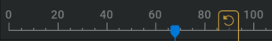
Freeze Simulation： 启用此参数会冻结模拟状态，同时仍继续渲染并推进时间轴。
Timestep： 模拟的内部帧率。从技术上说它不是重定时滑块，但可以通过降低该值让模拟略微加速，或通过提高该值让模拟减速。
Projection#
Projection 管理体积的不可压缩性。
Hourglass Filter Strength： Hourglass Filter 会尝试移除速度场中可能出现的伪噪声图案，例如棋盘格或交替图案；这些图案可能在强噪声和涡量注入存在时出现。通常会在不影响整体大尺度速度的情况下移除这些图案，并为叠加力和涡量提供更高质量的基础。在某些情况下可能更适合关闭它，因为此过滤器试图移除的人为噪声图案可能提供某种“细节”；但通常建议在从其他来源添加细节之前保持开启。
- Reuse Projection Solution： 复用上一时间步的 Projection 结果，通常会在适用时显著提升求解效率。对于没有突然或极端散度变化的设置，一般可以安全开启。以下情况不适合开启：
强燃烧/爆炸
压力注入快速变化
快速碰撞体
如果整个流体开始“晃动”，通常就是应该关闭它的信号。
Prevent Velocity Leakage： 防止速度从封闭容器和薄壁管状形状外泄。开启后会切换到开销更高的算法，该算法始终准确解析碰撞体，但计算成本相当高。
Collider Removal Amplifier： 值越高，会越激进地移除恰好进入碰撞体内部的体素数据。值太低可能会放大碰撞体壁附近的烟雾数据；值很高则会产生过多耗散。通常中间有一个不错的折中点，很难自动检测，但在适当时可以手动调整。
- Control Mode：
Simple： 隐藏高级 Projection 参数。对大多数场景来说是最佳方案，因为 Projection Quality 下拉菜单选项也会为你更改这些参数。
- Advanced： 显示高级 Projection 参数。这些参数需要流体求解器的技术知识。
Projection Iterations（投影迭代次数）： Projection 算法连续应用的次数。
Multigrid Cycles： Multigrid 求解器中的 V-cycle 数。通常一次迭代就足够，但在某些边缘情况下增加它会有用。与其他设置相比，修改此值对性能影响更大。
Solve Iterations： Multigrid 求解器最粗网格上的迭代次数。就质量和性能而言，超过某个与上下文相关的阈值后通常不太敏感。16 到 32 之间是一个不错的大致范围。
SOR Iterations： 每次投影迭代中的多重网格部分之后执行的 SOR 迭代次数。这有助于在碰撞体表面附近强制满足碰撞体边界条件。
Correction Iterations： 每次投影迭代末尾执行的顶点模板校正迭代次数。这有助于减少一些散度热点，否则这些热点不会被每次投影迭代中的多重网格或 SOR 部分处理。
Smooth weight： Projection（投影）的多重网格部分中，pre/post smooth（前/后平滑）迭代使用的（超）松弛权重。略高于 100% 的值会稍微改善收敛。
Solve weight： Projection（投影）的多重网格部分最粗层求解器迭代使用的（超）松弛权重。接近 200% 的值会更快收敛，但过大的值可能不稳定。
SOR weight： SOR 迭代使用的（超）松弛权重。接近 200% 的值会更快收敛，但过大的值可能不稳定。
Projection Quality： 更高质量设置会更好地强制不可压缩性，这等价于更好的速度守恒（物体移动更远）、更好的涡量守恒（更不容易受噪声退化影响）以及更好的烟雾守恒（烟雾不会过多人为耗散）。在高噪声和高涡量场景下，或使用实体地面和强向下力（例如较大的 smoke weight）时更明显。Standard 是不错的默认值。更高设置会降低性能。
不同预设位于 Projection Quality 下拉菜单中，会更改这些参数的设置；这些参数会在将 Control Mode 参数设置为“Advanced”时显示。手动更改其中任一设置会将 Projection Quality 设为 Custom。
Combustion#
- Advanced parameters： 勾选后，会显示更多参数和选项卡，以便对模拟进行更具体的控制。此选项卡中会显示以下参数：
Advect fuel： 定义燃料是像烟雾和温度一样进行平流，还是停留在发射器上。
Oxygen in fuel： 预先混入燃料中的氧气百分比。燃烧需要等量的燃料和氧气来点燃燃料；预混氧会确保燃料始终可以部分燃烧。
Oxygen in flames (*)： 火焰中的氧气，可让火焰燃烧得更快。
Combustion ignition temp（燃烧点火温度）： 有足够燃料和氧气时，燃料点燃所需的温度（Kelvin）。
Combustion temp gain（燃烧温度增益）： 燃料燃烧产生的温度（Kelvin）。
Combustion flames gain（燃烧火焰增益）： 每单位燃料燃烧时生成的火焰量。
Combustion fuel loss（燃烧燃料损失）： 每单位燃料燃烧时，每帧应消失的燃料量。
Combustion gas release（燃烧气体释放）： 燃烧释放的气体会局部增加压力，并扩展火焰/烟雾体积。
Extinction flames loss： 每单位火焰达到熄灭温度时损失的火焰量。
Extinction smoke temp： 火焰会在低于该温度时转换为烟雾。
Extinction smoke gain： 每单位火焰达到熄灭温度时增加的烟雾量。
Progressive ignition： 0% 会严格检测燃烧温度；值越高，燃烧会扩展到更宽的温度范围。
Progressive extinction： 0% 会严格检测熄灭温度；值越高，熄灭会扩展到更宽的温度范围。
Generated smoke： 燃烧生成的烟雾量。
Flame intensity： 值越高，燃烧产生的火焰越多。
Expansion： 燃烧的膨胀/爆炸性。
Dissipation#
Temperature, Velocity, Smoke, Flames, Fuel dissipation (*)（温度、速度、烟雾、火焰、燃料耗散乘数）： 每秒降低的比例。值为 50% 表示 1 秒后剩余一半温度，2 秒后剩余 25%，以此类推，即每秒乘以 0.5。
Smoke, Flames, Fuel dissipation (-)（烟雾、火焰、燃料耗散减量）： 每秒减去的量。因此值为 1 时，每个体素每秒都会减去 1.0 或 100%。这种方法比乘法方法的耗散更激进。
Diffusion#
Smoke, Temperature, Fuel, Flames, Velocity Diffusion Speed： 通道随时间进行 3D 高斯模糊。值越高，对通道的软化效果越强，并可产生更小尺度的视觉错觉。 Velocity Diffusion Speed 也称为 viscosity（黏度）。
Diffusion 强度与时间步长成正比，并与网格间距的平方成反比。
如果将时间步长减半，扩散效果也会减半（每步传播时间更短）；如果将体素大小减半，扩散强度会变为四倍。
Vorticity（涡量）#
Vorticity intensity（涡量强度）： 涡量放大系数。这会增强模拟中的每个小尺度涡旋，并向模拟添加旋转力，使其产生破碎感。
Large vorticity intensity（大尺度涡量强度）： 大尺度涡量放大系数。这会增强模拟中的每个大尺度涡旋，让烟雾和火焰翻卷自身，呈现更强的旋涡感。
Velocity mask： 速度对涡量放大的影响。速度越大，会生成越多涡量。
Temperature mask： 温度对涡量放大的影响。温度越高，会生成越多涡量。
Smoke mask： 烟雾密度对涡量放大的影响。烟雾越密，会生成越多涡量。
Constant mask： 涡量放大的基础值（独立于速度、温度和烟雾密度）。
Temperature Range： 使用 Range Slider（范围滑块）在指定温度范围内遮罩涡量。例如，这可用于只在模拟中最热的区域应用涡量。
Smoke Range： 使用 Range Slider（范围滑块）在指定烟雾范围内遮罩涡量。例如，这可用于只在烟雾最密集的部分应用涡量，让稀薄烟雾不受影响。
Vorticity ramp（涡量渐变）： 涡量约束的扩展范围；值越高，在旋度较低的区域会越减少涡量。
Force#
Force Tightness： Tightness 为 0% 时，连接到 Forces 引脚（位于 Simulation 节点）的力会添加到当前模拟中；Tightness 为 100% 时，额外力会完全替换现有力。
Buoyancy： 根据单元温度添加向上的力，以每 1000 Kelvin 的重力百分比表示。
Smoke weight： 根据单元中的烟雾密度添加向下的力，以每单位的重力百分比表示。
Fuel weight： 根据单元中的燃料密度添加向下的力，以每单位的重力百分比表示。
Gravity multiplier： 模拟中的整体重力。
Solid Ground, Ceiling, Wall -X, Wall +X, Wall-Y, Wall+Y： 切换后可让指定边界变为实体并使流体转向。（启用 ground（地面）、ceiling（顶面）、wall -X（-X 墙面）、wall +X（+X 墙面）、wall-Y（-Y 墙面）、wall+Y（+Y 墙面）碰撞。）
Wind#
Wind direction： 风吹动的方向。
Wind dir randomization： 风向随机化范围。值为 0 表示无随机化。
Wind speed： 风吹动的速度。
Wind chaos： 添加到风力中的噪声量。
Shredding（撕裂）#
Shredding intensity（撕裂强度）： 撕裂强度。低于指定温度的火焰会加速，高于指定温度的火焰会减速，从而使小火焰从主要燃烧区域脱离。
Shredding temp threshold（撕裂温度阈值）： 撕裂温度阈值。高于该温度的火焰会减速，低于该温度的火焰会加速。
Shredding threshold width（撕裂阈值宽度）： 撕裂中性区宽度。位于温度阈值周围该中性区内的火焰不会受撕裂影响。
Mask#
Mask shape： 用于遮罩模拟的形状。此处被遮罩的内容会从模拟中移除。
Mask intensity： 遮罩强度。值越高，每帧移除的烟雾/燃料/火焰/温度越多。
Mask distance： 遮罩厚度。值越高，会在模拟更深处移除烟雾/燃料/火焰/温度。
Visual#
在此选项卡中，你可以设置箭头来可视化速度。这有助于调试并理解速度在 2D 或 3D 空间中的样子。
Enable gizmo： 如果勾选，将开启箭头可视化及其相关参数。
Persistent Gizmo： 启用后始终显示 gizmo，即使
Simulation 节点未被选中。- Visual mode： 力 gizmo 的可视化模式。
- 3D Grid： 将箭头放置在 3D 网格中，一次性可视化整个力。
- Arrow type： 选择箭头的表示方式。不同方式在不同场景中可能提供更清晰的视觉效果。
Arrow： 可控制粗细的 3D 箭头。
Line： 由线组成的 2D 箭头。 Arrow thickness 参数不会影响此选项。
- Arrow color： 箭头的着色方法。
Mono： 所有箭头使用纯色。
RGB： 基于位置的颜色。
Heatmap： 基于力大小的颜色。
Arrow thickness： 3D 箭头形状的厚度。
- 2D Grid： 将箭头放在边界框的 2D 切片上，使力的形状更容易可视化，因为箭头不会重叠。
Axis： 决定可视化平面应对齐到哪个轴。
X,Y,Z plane offset： 切片平面的位置。这些参数可用于查看模拟的特定部分。
Heatmap： 如果勾选，会根据力的大小为箭头分配颜色。如果未勾选，所有箭头都会使用相同颜色。
Density： 每个体素可见的箭头数量。值越高会生成更多箭头，适合查看更细的细节。值越低会生成更少箭头，适合更清楚地查看方向。
Arrow size： 所有箭头的大小乘数。
Arrow size scaling： 决定箭头大小如何根据力大小变化。值为 0 表示力大小会乘以箭头大小，使力较小位置的箭头更小。值为 1 表示所有箭头大小相同。
Limit arrow count： 将显示的箭头数量限制在最多 250000 个，以便在合理时间内渲染。
Particles#
此选项卡包含由 Particles 节点创建的粒子的全局设置。
Particle max limit： 允许的 GPU 粒子最大数量，单位为百万。
Particles HQ rendering： 渲染质量。HQ 会添加抗锯齿，因此明显更慢。当 Velocity Aligned 用于 Particles render type 参数时，此效果在倾斜角度可能可见；该参数位于 Shape 选项卡中，属于 Emitter: Particles 节点。
Grouping size： 分配给每个组的粒子数量。
以下参数会在 Grouping size 不为 1:
- Grouping Type： 重新分组粒子的方法。
- Follow： 粒子会重新分组为拖尾。
Trail supersampling： 对拖尾进行超采样，即细分粒子之间的距离。1 表示每个粒子比下一个粒子晚 1 帧。32 表示每一帧距离之间有 32 个粒子。值越高，需要更高的 Grouping size 才能保持相同的拖尾长度。
Trail color attenuation： 拖尾中不同粒子之间的颜色衰减。 50% 表示每个连续粒子都会损失一半亮度。
Trail inertia： 拖尾粒子会以该强度沿初始速度继续移动。后续粒子会继承更多速度，使拖尾看起来更压缩且运动更平滑。
Trails inverted ramp： 反转拖尾惯性效果。
- Sphere： 粒子会重新分组为球状。
Sphere scale： 球体相对于原始粒子大小的缩放。 Size limits（来自 Shape 选项卡，属于 Emitter: Particles 节点）决定粒子组按该百分比缩放后的尺度。
Sphere stretch： 球体沿速度方向的拉伸量。
天空盒  #
#
此节点控制场景中的天空类型。
- Sky： 场景中使用的天空/背景类型：
None：禁用天空。
Uniform Color：使用 Background color 参数将天空设为单一颜色。
- Atmosphere：模拟真实天空。选择 Atmosphere 以外的任何选项时，继承的天空或太阳颜色不会作用于环境光和方向光。天空会根据方向光角度变化。此选项会显示以下参数：
Atmosphere color： 大气的基础颜色。其他色相都相对于此颜色。
Atmosphere Mie： 大气中的 Mie 散射百分比（大粒子散射）。值越高，地平线越模糊。
Atmosphere Rayleigh： 大气中的 Rayleigh 散射百分比（小粒子散射）。值越高，饱和度越高。
- Shade：使用颜色渐变作为天空。此选项会显示以下参数：
Background secondary color： 天空较高部分的颜色。
Shade start pos： Shade 的起始位置，0% 为底部，50% 为地平线，100% 为天顶。
Shade end pos： Shade 的结束位置，0% 为底部，50% 为地平线，100% 为天顶。
Background color： 主背景颜色。使用 Shade 模式时天空下部的颜色。
Sky intensity： 大气强度。值越高，天空越亮。
体积处理  #
#
像像素一样，体素也可以执行某些后处理效果，例如锐化。与  Shading 节点不同，
Shading 节点不同， Volume Processing（体积处理） 节点会修改体素内部的值来创建特定效果。这些效果在导出 VDB 时也会被嵌入。
Volume Processing（体积处理） 节点会修改体素内部的值来创建特定效果。这些效果在导出 VDB 时也会被嵌入。
Post Process#
- Volume post process： 体积后处理样式。可用选项如下：
None：无后处理。
- Motion Blur：沿体积速度方向模糊体积。此选项会显示以下参数：
Motion blur intensity： 运动模糊量。值越高，模糊越多且越长。
Smoke, Temperature, Fuel, Flames style： 每个通道使用的模糊方法。
- Sharpen：此选项会显示以下参数：
Sharpen smoke, temperature, flames, fuel, colors： 通道锐化。负值会产生模糊效果。
- Dilate：收缩或扩展体积。此选项会显示以下参数：
Smoke, Temperature, Flames, Fuel, Colored Smoke dilate： 通道膨胀。值越高会扩展/膨胀体积；值越低会收缩/侵蚀体积。
Dilate softness： 值越高，膨胀效果越弱。
Post Modulation#
此选项卡使用调制曲线。有关使用方法的更多信息，请查看我们的调制曲线页面！
Active： 如果勾选，调制会改变该分量。这也会显示下一个 Post Modulation 选项卡。
- Source： 用于计算调制的分量。
Smoke, Temperature, Fuel, Flames（烟雾、温度、燃料、火焰）：基于模拟通道的调制。它位于后处理之后（例如 sharpen（锐化）、motion blur（运动模糊）、dilation（膨胀））；如果前面还有另一个 post modulation（后调制），则也位于该后调制之后。
Velocity：基于速度通道的调制。可用于根据流体速度进行遮罩。
Vorticity：基于涡量通道的调制。可用于为效果添加一些细节。
Height：基于高度的调制，范围从边界框底部到顶部。
Post Processed Smoke, Temperature, Fuel, Flames（后处理后的烟雾、温度、燃料、火焰）：后处理之后、后调制之前的通道。
Pre Processed Smoke, Temperature, Fuel, Flames（处理前的烟雾、温度、燃料、火焰）：任何处理之前的通道。
Masking Shapes SDF：使用连接到 Mask Shapes 引脚（位于 Volume 节点）的形状进行调制。
- Noise：用于调制的 3D 噪声。此选项会显示以下参数：
Noise Seed： 每个种子都会生成唯一的噪声图案。
Noise scale： 噪声图案的大小。值越高，形状越大。
Noise Position： 噪声中心的局部位置。
Noise animation speed： 噪声图案的动画速度；值为 0 会得到静态噪声图案。
Noise Octaves： 噪声图案使用的噪声层数。值越高，噪声越细致。
Noise FBM Lacunarity： Lacunarity（空隙度）决定每个 octave（倍频层）的频率变化方式。lacunarity（空隙度）为 2.0 时，每个 octave（倍频层）的频率都会翻倍。值越高，每个 octave（倍频层）的细节越小。
Noise FBM Gain： Gain（增益）决定每个 octave（倍频层）的振幅变化方式。gain（增益）大于 1.0 会逐 octave（倍频层）放大噪声，小于 1.0 的值会衰减噪声。值越高，每个 octave（倍频层）中噪声对比越强。
Per octave curve： 重映射噪声值。可用于裁剪数值或更改对比度。（添加点：
单击，移除点： 双击，移动点： 拖动）
- Constant：用于调制的所有体素上的常量值。
Constant Amplitude： 用于调制目标的常量振幅，即常量强度。
Target： 将被调制/影响的分量。
- Operator： 应用于分量的调制类型：
Replace：用源值替换目标。
Add Sub：将源值添加到目标值；执行减法的条件是 Target Range 的最小值为负。
Min：使用源或目标中的最低值。
Max：使用源或目标中的最高值。
Multiply：将源值与目标值相乘。可用于从目标中遮罩源。
Source Range： 应用调制曲线之前的源范围。
Target Range： 调制曲线的输出范围。
Interpolation mode： 用于在 Remapping curve 曲线各点之间进行插值的方法。
Remapping Curve： 重映射 Source range（源范围）内的 Source（源）值。（添加点：
单击，移除点： 双击，移动点： 拖动）Masking Source： 这会遮罩已创建的调制效果。例如，将 Masking Source 设置为与 Target 相同的分量，可以用它来减弱调制效果。也可以根据高度、形状或噪声遮罩调制。
Slicing Mask#
裁剪效果的可见性。体积切片不会影响形状可见性。
Offset： 从指定墙面向内裁剪的百分比。
Width： 指定切片的宽度。值越高，过渡越宽/越柔和。
Mask ramp： 切片部分与未切片部分之间的 Gamma 插值。1 表示线性过渡。